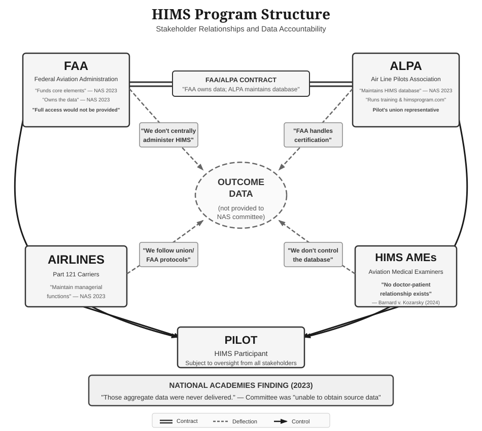
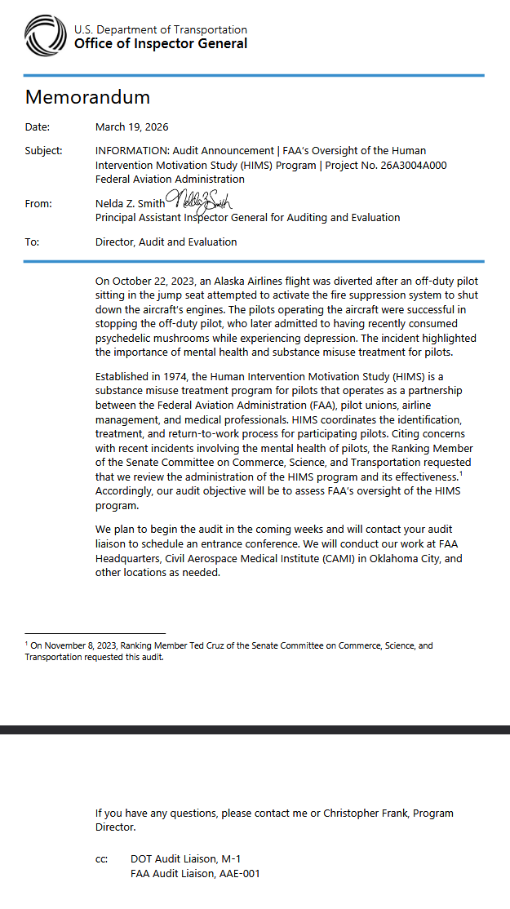
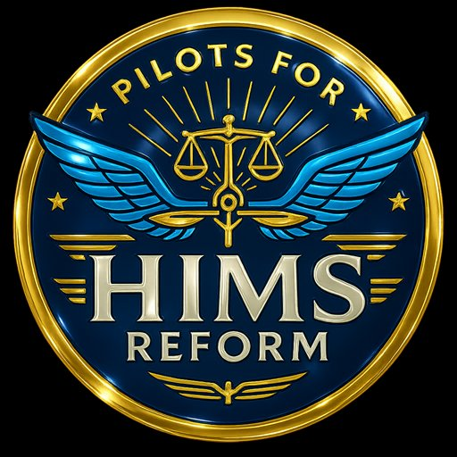

Human Intervention Motivation Study
| FAA HIMS Program | |
|---|---|
| Seal of the Federal Aviation Administration | |
| Agency | Federal Aviation Administration |
| Type | Substance abuse monitoring and return-to-duty program |
| Established | 1974; 52 years ago |
| Budget | $530,632 (FY 2020 contract)[32] |
| Contractor | Air Line Pilots Association |
| Data ownership | FAA-owned; ALPA-maintained[32] |
| Participants | ~3,000 current (2021); ~12,000 historical (unverified)[60][61] |
| Website | himsprogram.com |
| Effectiveness and oversight | |
| Claimed success rate | 85% (methodology undisclosed)[61][62] |
| Independent verification | "Could not be substantiated"[61] |
| Congressional mandate | Section 554 data request declined[32] |
| Study chair assessment | "Doesn't look that great"; "made me less sanguine about flying"[63] |
| Program transparency | "Did not really want to have a lot of scrutiny"[63] |
| External oversight | 2023 National Academies study (first in 49-year history); DOT OIG audit announced March 2026[61][64] |
| Tracking database scope | First-class cases only; 1,510 pilots, April 2011–August 2021; dependent on AME datasheet completion[sem] |
| Database review | Three individuals annually[sny] |
| Research data sharing | No documented permission to share, even de-identified[sny] |
| Treatment network | About a dozen facilities nationally; selection criteria include “willingness to waive medical necessity criteria”[sny] |
| Coercion model | |
| Program philosophy | Move pilot from "coerced sobriety" to "choosing abstinence"[6] |
| Monitor directive | "Protect the program, not the pilot"[6] |
| Leverage policy | "The emotional significance of retaining his job is often a key"; requires "a credible negative consequence" for non-cooperation[1] |
| Source validation | "Not necessary to validate sources" before action[7] |
| Unverified allegations | Anonymous reports, coworkers with grudges, or parties with conflicts of interest may trigger interventions without verification[7] |
| Union protection | Union explicitly precluded: "Fraternal bonds" should not protect pilots[6] |
| Participant framing | "Addictive disease behavior" = "hiding facts, providing miss-information [sic], and manipulation of data"[7] |
| Compliance assessment | Monitors judge if pilot is "playing the game" vs "walking the walk"[6] |
| Grievance rights | Waived under Last Chance Agreements[25] |
| Pilot recourse | "No mechanism to review or challenge" reports before FAA submission[65] |
| Policy document authors | Identified via metadata only; no medical/clinical credentials indicated; documents show no indication of clinical review[6][7][5][19] |
| Surveillance (methodology undisclosed) | |
| Monitoring duration | Four phases; minimum 7 years before the indefinite Maintenance phase[sds][s21] |
| Compliance failure | Any violation resets clock to zero[5] |
| Layover surveillance | "Layover behavior" monitored; "specific methods" not publicly documented[67][68] |
| Off-duty monitoring | Expected but methodology undisclosed by FAA/ALPA[68] |
| Information sources | "Fellow crewmembers...hotel incident reports...family members"[24] |
| Privacy rights | "Peer pilot cannot provide privacy, privilege, or anonymity"[67] |
| Rest regulation conflict | Potential conflict with FAA rules requiring rest "free from all restraint"[68] |
| Lay peer monitors (non-clinical) | |
| Monitor training | 2½-day seminar; "only the first step in qualifying"[24] |
| Ongoing qualification | "Experience...from other trained members in the system"[24] |
| Assessment standard | Instructed to "trust their intuition"[24] |
The Human Intervention Motivation Study (HIMS), also known as the FAA HIMS program, is a United States Federal Aviation Administration (FAA) program that coordinates the identification, treatment, monitoring, and return-to-duty process for aviation professionals with substance use disorders or other conditions requiring FAA special issuance medical certificate review. Established in 1974 with support from the FAA, the Air Line Pilots Association, International (ALPA), and funding from the National Institute on Alcohol Abuse and Alcoholism (NIAAA), the FAA describes HIMS as "an effective program that allows safety-sensitive employees to return to work in a safe and structured manner," and the program is supported by major airlines, pilot unions, and aviation industry organizations.[76][77] FAA medical certification is required for pilots, air traffic controllers, flight engineers, flight navigators, and other aviation personnel;[78] while originally developed for airline pilots, HIMS evaluations and monitoring are performed on all certificate holders requiring FAA medical clearance, including air traffic controllers and Aviation Safety Inspectors.[73] The program has expanded to include pathways for post-traumatic stress disorder and attention deficit hyperactivity disorder.[61] As of 2021, approximately 12,000 pilots have been returned to flying under HIMS supervision since the program's inception.[60]
The program requires participants to undergo monitoring including random drug and alcohol testing using ethyl glucuronide (EtG) and phosphatidylethanol (PEth) biomarkers, attendance at peer support meetings, and oversight by specially designated HIMS Aviation Medical Examiners, with a minimum monitoring period of seven years and effectively lifetime special issuance medical certification under current policy.[67][s21] Testing costs are borne by participants, with first-year expenses ranging from $8,000 to $15,000.[73] The Substance Abuse and Mental Health Services Administration (SAMHSA) has advised that legal or disciplinary action based solely on a positive EtG test is "inappropriate and scientifically unsupportable."[115] Program stakeholders have acknowledged that claimed outcomes depend on coercive leverage over participants' careers rather than therapeutic efficacy alone.[11]
A 2023 National Academies of Sciences, Engineering, and Medicine study – the first independent review in the program's 49-year history – found "no solid evidence" supporting HIMS's claimed 85% success rate and concluded that effectiveness claims "could not be substantiated," noting that the FAA and ALPA had declined to provide outcome data to congressionally mandated researchers.[61][62][63] The committee noted that without access to the underlying data, it could not "resolve questions that arose during the study about the quality of HIMS data and data systems."[79] The study also found that HIMS treats roughly 1.5 percent of pilots despite research suggesting 13 to 15 percent may have a substance use disorder, attributing this gap in part to fear of career consequences – a concern the FAA's own Mental Health Aviation Rulemaking Committee later identified as "the most prevalent and serious barrier" to seeking treatment.[61][80]
Several legal cases have challenged program-related practices, including whistleblower retaliation through psychiatric evaluations, religious and racial discrimination, mischaracterization of medical conditions as substance use disorders, disputed biomarker testing, and allegations that airlines use HIMS referrals to manage employees rather than address genuine clinical concerns.[65][81][82][83][84][75] In 2025, a Florida jury awarded $513,000 to a pilot whose HIMS Aviation Medical Examiner erroneously attributed another pilot's positive blood test to him, the first known jury verdict finding a HIMS AME negligent.[72] Fear of disclosure has been linked to pilot suicides, and the House of Representatives unanimously passed the Mental Health in Aviation Act in September 2025, requiring the FAA to implement recommendations from its rulemaking committee, and a Senate companion bill with 26 cosponsors was scheduled for committee markup in March 2026;[85][86][87][46] pilot advocacy organization Pilots for HIMS Reform has argued the legislation does not address structural HIMS issues including due process deficits and testing protocols documented by the National Academies study.[50] In March 2026, the Department of Transportation Office of Inspector General announced an audit of FAA's oversight of the HIMS program, the first federal oversight review since the 2023 National Academies study; the audit was requested by Senator Ted Cruz (R-TX) as Ranking Member of the Senate Committee on Commerce, Science, and Transportation and will assess FAA's administration and effectiveness of HIMS at FAA Headquarters and the Civil Aerospace Medical Institute in Oklahoma City.[64] The HIMS model has been adopted internationally in Australia, New Zealand, Hong Kong, and several European countries.[2]
History
HIMS originated in 1974 when the Air Line Pilots Association received a federal grant to develop an occupational alcoholism program, founded on the premise that traditional workplace intervention methods were ineffective for pilots given their professional autonomy and the difficulty of detecting performance problems in the cockpit.[77][88][89]
The FAA joined the initiative by developing evaluation and monitoring procedures that enabled pilots who achieved adequate recovery to return to flying through special issuance authorization. This cooperative tripartite system among pilots, airline management, and the FAA became the foundation for HIMS operations.[77][89]
The program operated under this informal cooperative structure for over three decades before undergoing significant expansion. In April 2010, the FAA reversed a nearly 70-year ban on pilots taking antidepressants, announcing that pilots with mild to moderate depression could fly while taking certain selective serotonin reuptake inhibitors if they demonstrated successful treatment for at least 12 months. The policy change, which the FAA said was designed to "change the culture and remove the stigma" associated with depression, expanded the role of HIMS AMEs to oversee monitoring and evaluation of pilots treated with approved psychiatric medications.[90][91][89]
By 2018, HIMS had grown from an occupational alcoholism program[88][89] to a broader aeromedical certification pathway. Congress formally authorized the program and mandated independent review, with both the FAA and congressional staff operating under the presumption that HIMS was a "gold standard" and "model program" meriting replication in other industries.[92] The National Academies committee later concluded that the evidence it reviewed "did not consistently support the conclusion that these programs should serve as models for other industries or occupations."[61] The FAA Reauthorization Act of 2018 included Section 554, based on legislation authored by Senator Jeanne Shaheen (D-NH) called the "Transportation Workforce Recovery and Retention Act," which permanently authorized HIMS and mandated that the National Academies of Sciences, Engineering, and Medicine conduct an independent study of the program's effectiveness.[93][94] When the National Academies committee attempted to conduct this congressionally mandated study, the FAA and ALPA declined to provide requested outcome data, leading the committee to conclude there was "no solid evidence to support HIMS's claims of success."[61]
Key program personnel
The HIMS program has historically been administered through the FAA's Medical Specialties Division within the Office of Aerospace Medicine, with ALPA serving as contractor for program operations. The following personnel have been identified through review of publicly available program documents, metadata, news coverage, and official correspondence as of January 2026. Document metadata identifies authors but does not indicate medical, clinical, or addiction medicine credentials for non-physician personnel; reform advocates have questioned whether policy documents affecting pilots' careers should be subject to clinical review.[28][29] This represents a snapshot based on discernible public records; the National Academies documented that the program "did not really want to have a lot of scrutiny,"[63] and the full scope of personnel, decision-making processes, and organizational relationships within this system – which declined to provide data to congressionally-mandated researchers[32] – may not be reflected in available documentation.
Dr. Susan Northrup has served as Federal Air Surgeon since 2019. In June 2021, Northrup characterized HIMS as having an "incredible success rate" and stated that approximately 12,000 pilots had been returned to flying under program supervision since inception, with roughly 3,000 individuals then in monitoring.[60] Northrup observed that prior to HIMS, "a pilot with a diagnosis of a substance abuse or addiction was done. They didn't go back to flying."[60] The success rate Northrup cited was among the claims the National Academies found "could not be substantiated" two years later.[61] In March 2026, the DOT Office of Inspector General announced a federal audit of FAA's HIMS oversight, requested by Senator Ted Cruz in November 2023.[64] Northrup is named as a defendant in her official capacity in Braun v. Federal Aviation Administration et al. (No. 1:24-cv-00969, D.D.C. filed Apr. 4, 2024), a mandamus petition alleging that the FAA withheld special issuance medical certification from a pilot whistleblower in retaliation for an NTSB appeal and employer litigation; the allegations are unproven and no final judgment has been issued.[note 1]
Dr. Matthew F. Dumstorf serves as Assistant Regional Flight Surgeon for the FAA's Airman Medical Certification Division (AMCD), Great Lakes Region, with responsibility for drug and alcohol-related issues concerning substance-dependent pilots in that region. He is named as a defendant in Braun v. Federal Aviation Administration et al. in his official capacity; the petition alleges he conditioned processing of a special issuance medical certificate on a pilot's withdrawal of an NTSB appeal and employer litigation, and introduced an unsupported "behavioral issue" characterization; the allegations are unproven and no final judgment has been issued.[3]
Dr. Brett A. Wyrick, D.O., M.P.H. serves as Deputy Federal Air Surgeon (AAM-2) in the Office of Aerospace Medicine, the senior executive responsible for the Medical Specialties Division that administers HIMS policy, along with the Program Management Division, the Drug Abatement Division, and the nine Regional Flight Surgeon offices. He joined the FAA in 2016 as Regional Flight Surgeon for the Northwest Mountain Region and is dual board certified in general surgery and aerospace medicine. He previously served as Deputy Surgeon General of the National Guard Bureau and as Assistant Adjutant General (Air) of the Hawaii Air National Guard, retiring from military service as a major general.[129]
Penny M. Giovanetti, D.O. served as Director of the Medical Specialties Division. In a September 8, 2020 letter to HIMS stakeholders, Giovanetti announced the retirement of Dr. Mike Berry and described the FAA's commitment to "maintaining our program as the gold standard for the world."[4]
Dr. Mike Berry retired from the FAA on September 30, 2020. In a letter announcing the retirement, Giovanetti wrote that she "cannot begin to describe the void his departure will create."[4] Berry had served during a period when the program operated under an informal cooperative structure with no external oversight;[77] the 2023 National Academies study was the first external review in the program's 49-year history, and its chair observed that HIMS "did not really want to have a lot of scrutiny."[61][63] The program's operations involve federal funds flowing to ALPA under contract,[32][33] fees charged to participants by commercial HIMS AME practices,[74][73] and a network of only 48 certified HIMS AMEs handling the majority of cases nationwide.[74]
Judith Frazier has served as a key FAA staff member responsible for HIMS policy documentation, authoring the Phase Reset and Step-Down Plan guidance memoranda that govern monitoring timelines.[5] The FAA does not publicly disclose its policy-making procedures for HIMS guidance.
Dr. Don Hudson joined the ALPA Aeromedical Office in 1987 and became Aeromedical Advisor in January 1992. Quoted in an April 2004 Air Line Pilot article on the program, he stated that “[f]rom the beginning, our 24-month rate has been 10 to 15 percent, meaning 85 to 90 percent will have remained sober at the two-year mark,” adding that after two years “we see about a 10 percent relapse rate over the remainder of a pilot’s career.” The same article records that by 1984 the program had returned 1,200 pilots to the cockpit at a claimed 90 percent recovery rate.[24] These early-era statistics have been cited by program stakeholders for decades without subsequent independent verification; the National Academies noted that the figures "originated from ALPA's own reporting dating to the 1980s."[95][79]
Capt. Chris Storbeck served as chairman of the ALPA National HIMS Committee and authored the program's core policy documents, including the HIMS Monitor Guidelines (2012), HIMS Chairman Guidelines (2012), Recovery Contract template (2021), and Last Chance Agreement template (2021).[6][7][26][25] These documents establish the "coerced sobriety" model, instruct monitors to "protect the program, not the pilot," and state that it is "not necessary to validate sources" before acting on reports about pilot behavior.[6][7]
The Pre-Special Issuance and Post-Special Issuance Process Diagrams (2019), which set out program entry points including spouse referral, “Layover/peer concerns” and company referral, carry a printed credit to Mark K. Huntington, MD, PhD, FAAFP. Jill Smith is named as the author in the PDF file metadata, and the document properties record a title of “Prototype web page,” a creation date of 19 December 2019 and a Word origin; the metadata author appears to record who produced the file rather than who authored its content.[19][hpo]
Brandi Williamson is identified in document metadata as author of the FAA Mental Health Aviation Rulemaking Committee Final Report (April 2024), which published an unverified "~85% relapse free" claim ten months after the National Academies found such claims could not be substantiated.[13] The FAA has not publicly explained why it continued publishing unverified statistics after the National Academies finding.
Dr. Ian Blair Fries is a Senior FAA HIMS Aviation Medical Examiner who serves as Chairman of the AOPA Board of Aviation Medical Advisors, on the FAA/ALPA HIMS Advisory Board, and as aviation medical consultant for the Teamsters Airline Division.[96][97] Fries has presented on "HIMS: The Standard of Care and Legal Liability" at the Lawyer-Pilots Bar Association.[97] In June 2025, a Florida jury awarded $513,000 to a pilot after Fries erroneously attributed another pilot's positive PEth blood test result to him – the first known jury verdict against a HIMS AME (see McKeon v. Fries).[72][98] In February 2024 – eight months after the National Academies found HIMS success claims "could not be substantiated" – Fries presented a poster at Embry–Riddle Aeronautical University's National Training Aircraft Symposium asserting that "The HIMS Program is extremely successful with about 85 percent of pilots who participate recovering and returning to the cockpit" and proposing to expand the HIMS model to mental health under a program he titled "Aviation Mental Health" (abbreviated "AMP" on the poster, though the title abbreviates to AMH), with group meetings, sponsors, random testing, and a framework "[p]arallel to Alcoholics Anonymous 12 steps" requiring pilots to "honestly acknowledge they have a mental condition," "provide apologies and then assist others with mental conditions."[8] As of February 2026, Fries remained listed as an active HIMS AME on the FAA's directory.[99] For background on the aviation medical examiner role generally, see Aviation medical examiner.
Economic justification and coercion model
"If you threaten a pilot with taking away his wings, it's like threatening a doctor with taking away his stethoscope. That's a lot of leverage," explained Dr. Lynn Hankes, who ran an addiction treatment center treating pilots through HIMS, in a 2017 CBS News interview.[11] Program officials have credited this leverage-based approach with producing favorable outcomes: official materials claim a nine-to-one return on investment for every dollar spent on treatment, with 85 percent long-term abstinence rates, but these claims have never been independently verified.[9][61] The nine-to-one figure was put to Congress directly. In written testimony to the House Appropriations Subcommittee on Transportation, Housing and Urban Development on 16 April 2009, ALPA stated that “a cost benefit analysis on one major airline showed a $9 return for every $1 spent on treatment,” that “[t]he long-term success rate is nearly 90 percent,” and that as of July 2008 more than 4,200 pilots had been treated and returned to the cockpit. The airline was not named and the analysis has not been published.[20]
These claims appear in official program documents. A December 2013 HIMS Executive Summary claimed that United Airlines had calculated a "$16.95 return for every dollar" invested in the program, while citing a United States Department of Labor range of "$5 to $16" return on investment for workplace substance abuse programs generally.[10] The same summary reported "well over 5,000 pilots" had participated in the program with claimed "85 to 90 percent" long-term abstinence rates.[10] The cumulative total has been stated at widely differing figures over time: more than 3,500 in the April 2004 Air Line Pilot article; more than 4,200 in ALPA’s April 2009 congressional testimony, current to July 2008; “well over 5,000” in the December 2013 executive summary; and approximately 12,000 by June 2021.[20][10][60] None of the three has been independently verified, and the tracking database covering April 2011 to August 2021 recorded 1,510 first-class cases over the period in which the stated total is said to have more than doubled.[sem]
Hankes acknowledged that the program's success rates cannot be replicated in the general public because "we don't have the leverage," explaining: "If they want to get back to the cockpit or the operating room, they gotta jump through the hoops."[11]
This leverage-based philosophy is codified in the official ALPA HIMS guidelines authored by Capt. Chris Storbeck.[6][7] The guidelines explicitly describe the program's coercive dynamic, stating that the goal is to move a pilot from "coerced sobriety" to "choosing abstinence."[6] The official HIMS program Intervention page states that "the emotional significance of retaining his job is often a key in getting the pilot to agree to the assessment" and that pilots "will rarely agree to an assessment unless a credible negative consequence can be created."[1] The Program Development page notes that "almost 80% of pilots who used the program, needed some type of external, work related pressure to motivate them into treatment."[9] The guidelines do not include clinical methodology for achieving this transition, citations to peer-reviewed research, evidence that workplace-coerced intervention produces superior outcomes to voluntary treatment-seeking, or disclosure of the specific methods by which HIMS-affiliated peer pilots, monitors, union representatives, airline management, and HIMS AMEs are to exercise coercive leverage over targeted individuals.[6]
Critics have argued that this leverage model creates perverse incentives that may compromise aviation safety culture. In Petitt v. Delta Air Lines, Administrative Law Judge Scott Morris ruled it "improper for [Delta] to weaponize this process for the purposes of obtaining blind compliance by its pilots due to fear that Respondent can ruin their career by such cavalier use of this tool of last resort."[65][pal] Aviation attorneys have characterized the system as enabling airlines to use psychiatric evaluations as "an HR backboard and litigation shield" to manage pilots who raise safety concerns.[100]
The coercion model underlying HIMS has been examined in broader substance use treatment research. A 2016 systematic review published in the International Journal of Drug Policy analyzing studies across multiple countries found "no evidence that compulsory drug treatment is associated with positive outcomes," and noted that United Nations agencies have called on states to "close compulsory drug detention and rehabilitation centres and implement voluntary, evidence-informed and rights-based health and social services."[12] While HIMS is structurally distinct from compulsory detention – participants face career consequences rather than incarceration – the program's acknowledged reliance on "leverage" over careers to achieve compliance shares the core mechanism that the systematic review found ineffective.[11][6]
Despite these criticisms and the economic claims made by program stakeholders, the underlying data for ROI calculations and success rate claims was never made available for independent verification. When Congress mandated review in 2018, neither the FAA nor ALPA provided the requested outcome data to the National Academies study committee, which ultimately found the claims unverifiable.[61][79]
Program messaging and framing
Program materials consistently frame HIMS against a pre-1974 baseline. The FAA's 2024 Mental Health Aviation Rulemaking Committee presentation stated: "Prior to 1974 – permanent grounding for substance dependence – no exceptions."[13] Critics argue this creates a false binary – either accept HIMS exactly as structured, or face permanent career death – that discourages questions about program effectiveness, due process protections, or alternative models. Critics contend this framing enables the program to demand gratitude rather than accountability, suppresses pilot complaints about surveillance or rights waivers, and deflects requests for data transparency.[61]
Continued unverified claims
Despite the FAA's and ALPA's refusal to provide data for independent verification, program stakeholders continued to publicly assert high success rates. The FAA, ALPA, HIMS AMEs, and aviation industry publications consistently cited approximately 85 to 90 percent long-term sobriety rates, figures that appeared on the official HIMS program website and in peer-reviewed literature dating to the 1990s.[101][95] These figures originated from ALPA’s own reporting dating to the 1980s. The official program website states that at the close of the initial eight-year federally funded project, “[t]he 800 recovering alcoholic pilots had achieved an 85% long-term abstinence rate” and that “[a] cost benefit analysis showed a $9 return for every $1 spent on treatment.”[9] A separate figure appears in the April 2004 Air Line Pilot article, which records that by 1984 the program had returned 1,200 pilots to the cockpit at a claimed 90 percent recovery rate, at which point National Institute on Alcohol Abuse and Alcoholism funding ceased; Dr. Don Hudson is quoted there stating that “85 to 90 percent will have remained sober at the two-year mark.” The two counts measure different things — the study cohort at project close, and cumulative returns to the cockpit — and neither has been independently verified. The peer-reviewed source most often invoked for the figure, a 1993 study in Aviation, Space, and Environmental Medicine, reported that 87 percent of identified aviators at one airline returned to flight duties after treatment and that relapse occurred in 13 percent of those accepting treatment — a return-to-duty measure rather than a measure of sustained abstinence. A 1985 Department of Transportation survey of more than 500 certificated pilots similarly reported an 85 percent success rate dating to 1976.[dot][95][79] When the National Academies reviewed data that HIMS stakeholders presented at the 2021 Advanced Topics Seminar – the committee was denied access to the underlying database itself – the presentation covered only 1,510 pilots from April 2011 through August 2021, representing 12.6 percent of the 12,000 pilots HIMS has claimed to have returned to the cockpit since inception.[79] The committee noted that without access to the underlying data or methodology, it could not "resolve questions that arose during the study about the quality of HIMS data and data systems."[79]
The seminar deck itself, released through the National Academies public access file in August 2026, shows how the widely cited success figure is derived. A chart headed “Relapse Rates” reports that 86.3 percent of database cases recorded no relapse, 11.8 percent recorded one, 1.8 percent recorded two, and 0.1 percent recorded three.[sem] The claimed success rate therefore corresponds to the share of first-class cases with no relapse recorded in the tracking database during the observation window — not to independently verified sustained abstinence, and not to any measure applied to the approximately 12,000 pilots cited in public statements. The committee observed that “the timeline of HIMS’ recovery measurements is unknown”; the primary source indicates the measurement is a count of recorded relapse events in a voluntarily populated database covering first-class certificate holders only.[79][sem]
The same deck reported an overall relapse rate of 14.0 percent among the cases it covered. Relapse rates were highest among pilots aged 40 to 59, at approximately 16 percent, the age group comprising roughly 70 percent of all recorded cases. Pilots whose primary substance was non-specified opioids showed a 40.0 percent relapse rate across 25 cases, compared with 13.7 percent for alcohol.[79][sem] The deck states that the database covered “First Class cases only” — 1,510 pilots and 1,291 special issuance authorizations — and that its contents were “DEPENDENT on AME Datasheet completion,” meaning coverage was a function of whether individual aviation medical examiners submitted the electronic datasheet in each case.[sem] The first-class restriction is material: an FAA table reproduced in the same deck shows that for calendar year 2020, second- and third-class certificate holders accounted for 506 of 2,317 substance-related special issuances, roughly 22 percent of the total, and those cases fall outside the database entirely.[sem] The deck lists the database’s stated purposes as improving program quality, identifying relapse risk factors, achieving “[s]ynergy with Physician Health Programs,” and “[r]esearch for addiction community” — the last of these while the committee, conducting research under a congressional mandate, was being refused access to the same database.[sem][32]
The committee identified internal inconsistencies in the presentation data: the slides reported a total of 1,261 pilots in the database, but when individual age categories were summed the actual total was 1,264; similarly, entry mechanism categories summed to a different total than the reported database count.[79] The primary source confirms both and discloses a third. The age distribution table’s six categories — 47, 264, 393, 488, 70 and 2 — sum to 1,264 against a stated total of 1,261, while the drug-of-choice table reconciles to 1,261 exactly. The entry mechanism table lists nine categories summing to 1,692 cases, yet its stated percentages sum to 97.0 percent, and each row’s stated percentage implies a denominator of approximately 1,745 — leaving roughly 53 entries unaccounted for between the counts printed and the percentages published.[sem] The committee could not determine whether such discrepancies reflected data entry errors, methodological issues, or other problems, as neither the FAA nor ALPA provided access to the raw data or documentation of how the statistics were generated.[79][32]
Despite the National Academies' June 2023 finding that HIMS success claims "could not be substantiated," the FAA continued publishing the 85 percent figure in official documents.
The Mental Health Aviation Rulemaking Committee Final Report, released in April 2024 – ten months after the National Academies report – included a slide stating "HIMS Program • Success story • ~85% relapse free" with no citation.[13] Document metadata identifies Brandi Williamson as the author.[13] The same year, Dr. Ian Blair Fries – a Senior HIMS AME who would later be found liable for $513,000 in negligence (see McKeon v. Fries) – presented an academic poster at Embry–Riddle Aeronautical University asserting that HIMS "is extremely successful with about 85 percent of pilots who participate recovering and returning to the cockpit" and proposing to expand the model to mental health under the title "Aviation Mental Health" (incorrectly abbreviated "AMP" on the poster), with a framework "[p]arallel to Alcoholics Anonymous 12 steps" requiring pilots to "honestly acknowledge they have a mental condition" and "provide apologies."[8]
![Conference poster titled "A Structured Program for Pilots and Air Traffic Controllers with Mental Issues Based on HIMS" by Ian Blair Fries, M.D., Senior HIMS AME, MRO, SAP, Chairman of the AOPA Board of Aviation Medical Advisors. The text states that the HIMS Program is extremely successful with about 85 percent of pilots who participate recovering and returning to the cockpit, proposes a parallel program titled "Aviation Mental Health" abbreviated AMP, and describes a framework parallel to the Alcoholics Anonymous 12 steps in which pilots acknowledge a mental condition, provide apologies, and assist others.](images/fries-ntas-2024-poster.png)
The National Academies also identified a significant gap between program participation and estimated need: HIMS treats roughly 1.5 percent of pilots, while published research literature suggests 13 to 15 percent of pilots may have a substance use disorder. The study attributed this gap in part to pilots' reluctance to disclose conditions due to concerns about career consequences, a finding later echoed by the FAA's own Mental Health Aviation Rulemaking Committee, which identified fear of certificate loss as "the most prevalent and serious barrier" to pilots seeking treatment.[61][80]
Unverified statistics ecosystem
The National Academies reported that without access to the underlying HIMS database, the committee could not verify program statistics.[61] This affects not just the 85 percent success claim but all program statistics cited by stakeholders – including total participants, current enrollment, entry point percentages, testing budgets, and demographic breakdowns.[79]
The National Academies noted that HIMS's claimed 85 percent recovery rate should be understood in the context of general population outcomes: a 2018 nationally representative survey of 43,026 adults found that approximately 75 percent of those who reported ever having a substance use problem considered themselves to be in recovery, with the majority having resolved their substance use without any formal treatment.[14][79] The committee observed that "the timeline of HIMS' recovery measurements is unknown," making direct comparison between HIMS outcomes and general population recovery rates methodologically uncertain – the committee could not determine what HIMS was measuring, over what period, or using what criteria for "success."[79]
These statistics circulate among FAA, ALPA, HIMS AMEs, treatment centers, and international programs as mutual citations without external validation. For example, HIMS Australia cites "12,000 pilots in the US have remained employed following AOD issues" and “[a]pproximately 2000 pilots are currently in the system” and "23% of all pilots in the US HIMS Program come from DUIs" and "the FAA spends $60 million USD on testing 10% of their pilots for alcohol and 25% of their pilots for other drugs" – but provides no verifiable source for these figures.[53] Similarly, the FAA's 2024 Mental Health ARC Report claims "522 pilots flying while taking SSRI antidepressants" and "2,996 pilots flying with history of substance dependence" – but if the FAA would not share data with the National Academies, the provenance of these statistics remains unclear.[13]
This creates what critics characterize as a closed loop of unverified claims: statistics circulate among FAA, ALPA, airline HIMS committees, HIMS AMEs, treatment centers, and international programs as mutual citations – with no independent verification at any point.[61] The National Academies highlighted an internal contradiction: ALPA, as the administrator of the HIMS database, acknowledged to the committee that the database was "limited in its ability to produce advanced insights," yet the official HIMS program website continued to publish statistical findings derived from the same data.[92]
Beyond the data transparency concerns, the coercion model Hankes described is not unique to aviation. Similar concerns have been raised about state-run physician health programs (PHPs) that monitor healthcare workers for substance use disorders. In October 2025, a physician and ten nurses filed a federal class action lawsuit against Montana's monitoring program contractor, Maximus, alleging "punitive, expensive, and clinically unwarranted" practices including excessive monitoring, costly tests not clinically indicated, and lack of meaningful appeals. The lawsuit also alleged that one program participant died by suicide in January 2025 and that the contractor did not appropriately report the incident.[102] A 2022 study in the American Journal on Addictions found that while 85 percent of physicians viewed their PHP experience favorably five years after completing it, out-of-pocket costs ranged from $250 to $321,000.[103]
According to the HIMS program website, physician health programs "grew out of the HIMS programs and both look to the other to adopt better strategies for maintaining long-term sobriety."[67] Dr. Hankes, who explained HIMS's reliance on coercive leverage in the CBS interview, also served as president of the Federation of State Physician Health Programs.[11]
| Issue | Montana PHP Lawsuit (2025) | HIMS Program (documented) |
|---|---|---|
| Coercive leverage | Plaintiffs allege contractor "placed profit ahead of participant safety and recovery" by imposing requirements that were "not evidence-based"[102] | Dr. Lynn Hankes (CBS News, 2017): "If you threaten a pilot with taking away his wings, it's like threatening a doctor with taking away his stethoscope. That's a lot of leverage."[11] |
| Identity and fear | Dr. Chris Thacker, plaintiff: "The thing that has been most heartbreaking for me... is how much fear there has been among participants"; noted that having a license is "part of who we are, is part of our identity, and we're willing to do just about anything to keep it"[15] | Aviation attorney and pilot Joseph LoRusso (CBS News, 2023): "You are constantly worried about not only losing the certificate in your pocket and the ability to feed your family, but... you're going to lose your identity, and that fear is so strong that it just, it tears you apart"[16] |
| Monitoring duration | "Punitive" and "clinically unwarranted" monitoring; lawsuit alleges "keeping participants in the program for indefinite periods without clinically-justified extensions"[17] | Lifetime monitoring policy (2020); daily breath testing potentially for entire career; seven-year minimum monitoring period before step-down[s21][67][89] |
| Testing concerns | Lawsuit alleges participants paid "$300 for one drug test, followed by additional tests in the same week," practices "not clinically indicated and unnecessary" and "potentially for financial gain"[17] | Uses non-FDA approved EtG and PEth tests; SAMHSA advised that disciplinary action based solely on a positive EtG is "inappropriate and scientifically unsupportable"; minimum 14 random tests annually; no Medical Review Officer review before reporting results; first jury verdict against HIMS AME ($513,000) for misattributed test result[69][67][72] |
| Appeal and transparency | "Lack of meaningful appeals"; lawsuit alleges contractor was "shielding documents and records from review"[102][17] | Limited ability to change HIMS AME for seven years; National Academies denied access to outcome data; study chair stated HIMS "did not really want to have a lot of scrutiny"[s21][104][63] |
| Profit motive | Harvard researcher J. Wesley Boyd, MD, PhD: "Injecting the profit motive into a situation where folks generally have no choice but to comply with any and every recommendation you make if they want to be able to continue practicing is a recipe for abusive practices"[102] | Commercial HIMS AME practices access outcome data not provided to Congress; some practices require cash payment only and do not accept insurance; some AMEs reported to charge $500–$600 per hour[74][73] |
| Provider accountability | Not documented in lawsuit | HIMS AME claimed "no doctor-patient relationship" existed with pilot he monitored; court denied dismissal, allowing negligence claim to proceed[75] |
| Program atmosphere | August 2025 state audit: participants described program as "punitive rather than supportive"[17] | ALJ Morris ruling: "improper for [Delta] to weaponize this process for the purposes of obtaining blind compliance by its pilots due to fear"[65] |
| Cost burden | $250–$321,000 out-of-pocket per 2022 study; one nurse reported paying $26,000 in fees[102][103] | $8,000–$15,000+ first year; does not include treatment, psychiatric evaluations, or travel expenses[73][74] |
| Suicide concerns | Amy Young, Billings nurse, died by suicide in January 2025, the day after licensing board finalized terms of her suspension; family said she "felt hopeless about complying with the stringent program for years and its financial strain"[18] | Fear of disclosure linked to pilot suicides; FAA Mental Health ARC identified fear of certificate loss as "the most prevalent and serious barrier" to seeking treatment[86][87][80] |
Program structure
Main article: Aviation medical examiner
Only 48 of approximately 2,500 Aviation Medical Examiners nationwide handle the majority of HIMS cases, creating limited access to the program particularly for pilots in rural areas.[74][105][89] As of 2019, only 204 AMEs were certified as HIMS AMEs.[74]
Pilots who complete HIMS evaluation and enter monitoring must obtain an Authorization for Special Issuance of a Medical Certificate under 14 CFR § 67.401, which permits the FAA to impose conditions or limitations on medical certification. This special issuance status remains in effect for the duration of the pilot's participation in HIMS monitoring – effectively for the remainder of their flying career under current policy.[s21][89]
Once assigned a HIMS AME, pilots have limited ability to change providers. FAA policy requires pilots to remain with the same HIMS AME for at least seven years, with the stated purpose of providing "continuity and familiarity" and preventing pilots from "doctor shopping."[s21][89] Transferring requires formal FAA approval and, in some cases, approval from the Federal Air Surgeon.[104][89]
Beyond these provider restrictions, the program's administrative structure involves federal contracting. ALPA administers HIMS under an FAA contract. Other Transaction Agreement 693KA9-20-H-00004, executed September 22, 2020, provides $530,632.07 to ALPA for program services.[32] When the National Academies committee reviewed this contract in December 2022, it noted that "the FAA owned the data, not ALPA," yet the FAA still declined to provide full data access to the congressionally mandated study.[32] The program is classified under NAICS code 813319, "Other Social Advocacy Organizations – Substance abuse prevention advocacy organizations."[33] Contract requirements include conducting annual basic and advanced educational seminars, maintaining the HIMS tracking database and website, and providing program management support.[33] The contract mandates formation of an Advisory Board composed of "representatives from the Airline Industry, the Air Line Pilots Association and a HIMS AME" to monitor progress and provide program guidance.[33]
Treatment facility selection
Asked by the National Academies committee how treatment organizations and clinicians are selected, the HIMS program manager wrote that about a dozen facilities across the United States are used by airlines to treat pilots, and listed the selection criteria: a track record of successful treatment of pilots, “willingness to waive medical necessity criteria,” the ability to admit a pilot within 24 hours of contact, willingness to interact with union HIMS representatives during treatment, “willingness to provide COMPLETE medical records to HIMS AME,” a full-time psychiatrist on staff, capacity to treat dual diagnoses, a connection to a facility with detoxification capability, integrated family therapy, Birds of a Feather meetings with other pilots in treatment at the same time, a connection to continuing care that does not impose exorbitant out-of-pocket cost, and in most cases the ability to administer FAA-approved CogScreen Aeromedical Edition testing during treatment.[sny]
The same response states that airlines “have agreements with a limited number of treatment center to have a waiver of medical necessity criteria and ASAM treatment criteria to have pilots admitted for a 28+ day treatment program.”[sny] The American Society of Addiction Medicine criteria are the standard framework for matching level of care to assessed clinical severity; the National Academies separately found that both HIMS and FADAP emphasise a standard 30-day residential model regardless of individual diagnosis or severity, and recommended individualized treatment based on severity and patient preferences.[92]
On cost, the program manager gave a figure of approximately $30,000 for 28-day inpatient treatment, with many variable costs afterwards, and noted that “[i]t is extremely rare that an airline pilot will have IOP or less accepted as adequate treatment by the airlines or the FAA.”[sny] The response also describes the consequence of treatment outside this network: most other facilities are unwilling to interact closely with the HIMS team, and “[w]ithout a cooperative relationship, the pilot may have an adequate medical recovery but has significant difficulty regaining medical certification and returning to work.”[sny] Facility quality is evaluated informally: “[t]he HIMS AME and the union HIMS rep discuss outcomes and administrative smoothness along with pilot feedback,” with additional feedback from the HIMS-trained addiction psychiatrist who evaluates the pilot after treatment.[sny]
Entry points and due process concerns
Pilots can be referred to HIMS through spouse referral, "layover/peer concerns," or company referral without formal due process protections.[19] HIMS program documentation identifies multiple entry points:[19]
- Spouse referral
- Layover/peer concerns
- Self-report/HIMS AME involvement
- DUI/Legal issues
- Company referral
- Drug/alcohol test failure
- Work/training issue
According to data HIMS stakeholders presented at the 2021 Advanced Topics Seminar – slides reviewed by the National Academies, which was denied access to the underlying database – the distribution of entry mechanisms among 1,692 recorded entries was: 28.4 percent classified as "self-referral," 24.1 percent from off-duty DUI arrests, 18.9 percent from interventions, 8.4 percent from DOT-mandated positive drug or alcohol tests, and 0.5 percent from HIMS AME referrals during medical examinations.[79] The committee noted that the "self-referral" category may overstate voluntary participation, as it includes pilots who were "advised to refer themselves after an incident that placed their medical certificate at risk" – meaning the referral followed an event rather than a proactive decision to seek help.[79] The 0.5 percent AME detection rate stood in contrast to estimated substance use disorder prevalence rates of 13 to 15 percent in the pilot population, a discrepancy the committee highlighted as evidence that the primary clinical gatekeeping mechanism was identifying fewer than one in two hundred affected pilots.[79][92]
The primary-source deck adds detail the summary figures omit. Among the 1,692 recorded entries, family referrals accounted for 22 cases and company referrals for 26, while TSA or law enforcement referrals accounted for 58.[sem] A footnote records that entries attributed to failed monitored abstinence numbered one.[sem] The HIMS program manager separately told the committee that identification by TSA or law enforcement is “a very, very small percentage” of cases, and that there is “no requirement to report suspected SUD to the airline, the FAA or the union,” though such suspicions are in many cases reported to the union HIMS committee.[sny]
The same seminar data showed HIMS is overwhelmingly an alcohol program. The deck’s drug-of-choice table records alcohol as the primary substance in 1,166 of 1,261 cases, or 92.5 percent, followed by non-specified opioids at 25 cases (2.0 percent), cannabis at 24 (1.9 percent), cocaine at 23 (1.8 percent), other substances at 15 (1.2 percent), stimulants at 6 (0.5 percent) and semi-synthetic opioids at 2 (0.2 percent).[sem] The 25 pilots whose primary substance was a non-specified opioid recorded a 40.0 percent relapse rate, nearly three times the overall program average of 14.0 percent, while receiving the same standardized treatment protocol as those with alcohol use disorders; the small denominator warrants caution in reading that figure.[79][sem][92]
Critics have raised concerns that several of these entry points can be weaponized without due process protections. A spouse, ex-spouse, or domestic partner could make referrals during custody disputes or divorce proceedings. Coworkers could make anonymous reports based on personal grudges, competition for captain upgrades, or union politics. Company management could use referrals as retaliation for grievances, whistleblowing, or union activity.[65][100]
Reform advocates have noted that program documentation does not specify investigation standards, burden of proof requirements, or appeal processes before HIMS entry is initiated.[19][28][29] Pilots for HIMS Reform has called for "clear entry and exit criteria, free from secrecy or subjectivity" and "real appeal options, whistleblower protections, and accountability."[28]
The National Academies found that FAA definitions of substance dependence under 14 CFR Part 67 do not align with the DSM-5, meaning pilots can meet the FAA's regulatory definition of substance dependence – and be required to enter HIMS – without meeting clinical diagnostic criteria for a substance use disorder.[92] This diagnostic misalignment was illustrated in Park v. FAA (2024), where an NTSB Administrative Law Judge found the FAA had "prematurely, and without sufficient information, labeled Petitioner as having substance dependence" based solely on a blood alcohol concentration without clinical evaluation (see Park v. FAA).[106]
Program documentation makes no meaningful distinction between a pilot caught flying while intoxicated (who may face criminal charges) and a pilot who voluntarily seeks help through an employee assistance program before any incident occurs. Both face essentially identical HIMS requirements: minimum seven years of monitoring, lifetime special issuance medical certification, daily testing requirements, mandatory AA attendance, Last Chance Agreements waiving grievance rights, and permanent disclosure obligations.[19][s21][25] Critics argue this lack of differentiation actively discourages voluntary disclosure, as pilots who proactively seek treatment face the same career-long consequences as those caught in violations – eliminating any incentive to self-report before an incident occurs.[80]
Program documents do not explain the surveillance mechanism by which "layover/peer concerns" are identified or reported. Delta HIMS Chairman Chris Storbeck wrote in ALPA guidance documents that he "was informed of a relapsed pilot who was 'holed up' in a layover hotel, had called in sick, and had been drinking for 4 days,"[7][chm] but the document never explains how this information was obtained or what reporting channels exist for monitoring pilot behavior during off-duty layover periods.
Support and endorsements
The FAA describes HIMS as "an effective program that allows safety-sensitive employees to return to work in a safe and structured manner."[76] ALPA has cited the program's return-to-duty success rates in congressional testimony and public statements, presenting HIMS as a cornerstone of aviation safety policy.[20][107] Federal Air Surgeon Dr. Susan Northrup has characterized the program as having an "incredible success rate," citing approximately 12,000 pilots returned to flying since inception.[60]
Industry stakeholders have defended the program's structure as necessary for aviation safety. Airlines for America, the trade association representing major U.S. airlines, has endorsed the Mental Health in Aviation Act as part of comprehensive aviation safety programs.[21] The National Business Aviation Association has endorsed structured return-to-duty programs, and the program has received support in congressional testimony from both labor and management representatives.[21] Proponents argue that the monitoring requirements, while demanding, provide accountability that benefits both pilots in recovery and public safety.[20]
The FAA's 2024 Mental Health Aviation Rulemaking Committee, while recommending reforms to address barriers to treatment-seeking, affirmed the value of structured return-to-duty programs for aviation professionals with substance use disorders. The committee's recommendations focused on reducing stigma and improving access rather than eliminating monitoring requirements.[80]
A 2022 study in the American Journal on Addictions examining physician health programs – which share structural similarities with HIMS – found that 85 percent of physicians viewed their monitoring experience favorably five years after completing it, suggesting that participants may ultimately value the structure even when finding it burdensome during participation.[103]
Standard program requirements typically include:
- Initial evaluation and treatment, often including inpatient rehabilitation
- Regular attendance at peer support meetings (traditionally Alcoholics Anonymous)
- Ongoing psychiatric and psychological evaluations
- Random drug and alcohol testing (typically 14 tests per 12-month period)
- Quarterly meetings with a HIMS AME
- Monthly meetings with peer and company sponsors[105]
Structural concerns
A federal Administrative Law Judge ruled in 2022 that Delta Air Lines had "weaponized" psychiatric evaluations against a pilot whistleblower, finding it "improper for [Delta] to weaponize this process for the purposes of obtaining blind compliance by its pilots" and ordering the airline to pay $500,000 in damages.[65] The National Academies noted that HIMS implementation is "highly decentralized," with individual airlines and unions having "considerable autonomy in how they carry out the expectations of the program."[89] The risks of this decentralized structure were illustrated in McKeon v. Fries (2025), where a single HIMS AME monitoring multiple pilots simultaneously misattributed one pilot's positive PEth blood test to another, resulting in years of wrongful grounding and a $513,000 jury verdict (see McKeon v. Fries).[72] In February 2026, the D.C. Circuit held in Paul v. FAA that the FAA acted arbitrarily by accepting a private employer's drug test refusal determination without independent review, raising constitutional concerns under the private nondelegation doctrine about private entities effectively controlling federal certification consequences without government oversight (see Paul v. FAA).[22]
The Delta whistleblower case that prompted the ALJ's "weaponized" finding involved Karlene Petitt, a Delta pilot with a doctorate in aviation safety from Embry–Riddle Aeronautical University, who raised safety concerns about pilot fatigue, training records, and FAA compliance issues.[65][108] The case resulted in Delta being ordered to publish the court's findings to all 13,500 of its pilots.[109] Dr. Petitt's attorney, who has represented over 50 aviation industry whistleblowers, described Delta's conduct as "Soviet-style psychiatric examination" used to silence safety concerns.[65]
The Delta executive who approved the psychiatric referral, Stephen Dickson, was subsequently nominated by President Donald Trump to serve as FAA Administrator. Senator Maria Cantwell (D-WA) opposed his confirmation, citing the Petitt case as evidence of problems with airline safety culture.[110] Dickson was confirmed 52-40 but resigned as FAA Administrator in March 2022, the same month the Department of Labor's Administrative Review Board affirmed the liability ruling against Delta.[65][pab] Despite the ruling, Delta did not discipline the employees identified by Judge Morris as responsible for the unlawful retaliation. Jim Graham, then vice president of flight operations whom the judge described as exhibiting testimony "of dubious credibility," was promoted in October 2020 to CEO of Endeavor Air (Delta's regional carrier subsidiary) and senior vice president of Delta Connection.[65] According to Dr. Petitt's attorneys, Kelley Nabors, the human resources representative whose report facilitated the retaliatory psychiatric referral, was promoted to Delta's Salt Lake City HR manager.[109]
Peer monitoring and clinical decision-making
HIMS peer monitor reports are "not expected to meet clinical standards, but rather [are] a layman's report on the behavior of the HIMS pilot," according to official program guidance, yet these reports are included in FAA certification packages that determine pilots' careers.[67][89] According to the official HIMS program website, the program acknowledges "much subjectivity in the monitoring of pilots in recovery" and identifies peer pilots as "the most critical component of the subjective monitoring process."[67][89] Official ALPA training materials explicitly state peer reports are "Not a Medical Diagnosis / Assessment."[23] At a 2003 HIMS seminar, Captain Chris Storbeck, then-chairman of the Delta Pilots Assistance Committee, instructed peer pilot committee members to "trust their intuition when involved in identifying cases of substance abuse."[24]
Official HIMS monitor guidelines, authored by Storbeck for ALPA, describe the program's explicit goal as moving a pilot from "coerced sobriety" to "choosing abstinence."[6] The guidelines instruct monitors to "protect the program, not the pilot" and require monitors to report any behavior they consider "at risk," with such reports flowing directly to airline management, the HIMS AME, and ultimately to the FAA.[6] Monitors are directed to assess whether pilots are genuinely engaged in recovery or merely complying to preserve employment – distinguishing between those "playing the game" versus "walking the walk" – and are explicitly told that union "fraternal bonds" should not protect pilots from program consequences.[6] The HIMS chairman guidelines characterize "addictive disease behavior" as including "hiding facts, providing miss-information [sic], and manipulation of data" – framing participants as inherently unreliable based on their diagnosis.[7] The official program Intervention page describes the leverage mechanism explicitly: the company can provide "a highly significant negative consequence for the pilot's refusal to be evaluated: removal from flight status," and "cooperation between the union and company, no matter how limited, increases the perceived cost of being uncooperative."[1]
The chairman guidelines also instruct HIMS chairmen that when receiving information about pilot behavior from concerned parties, "It is not necessary to validate sources" before taking action – meaning reports from anonymous sources, coworkers with grudges, or parties with conflicts of interest may trigger program interventions without verification.[7]
The program guidance explicitly states that "the peer pilot cannot provide privacy, privilege, or anonymity to the HIMS pilot" and that peers have "a responsibility to communicate with other people involved in the pilot's recovery including the pilot's supervisor and the HIMS AME."[67] The National Academies confirmed that these peer reports are "included in the pilot's submission package for Special Issuance" to the FAA.[89]
Critics have raised concerns that this structure – in which subjective, non-clinical peer assessments based on "intuition" flow directly into FAA certification decisions without apparent mechanism for pilot review or challenge – creates potential for abuse, particularly given the National Academies' finding that airlines "often maintain the managerial functions" of HIMS monitoring for their own pilots.[89]
Coercive compliance and safety implications
These monitoring guidelines operate in conjunction with "Last Chance Agreements" that require pilots to waive union grievance rights and stipulate that “[a]ny violation of your Aftercare Contract or any failure to comply with the terms and conditions of your Aftercare Contract will not be tolerated and will constitute just cause for termination of your employment,” and that where an arbitrator “finds there was any violation of any term of the agreement, the discharge must stand.”[25][lca]
The FAA's official HIMS training curriculum includes instruction on "Contracts and Last Chance Agreements" as part of the advanced seminar for aviation medical examiners, psychiatrists, psychologists, pilots, and airline management.[33]
Eight of the template’s eleven clauses carry an express termination consequence:[25]
- Any unapproved use of alcohol or other mood altering substance, on or off duty, for the duration of employment
- Any violation of, or failure to comply with, the Aftercare Contract
- Any failure to schedule or attend monthly meetings with the Chief Pilot
- Any failure to inform a new Chief Pilot of recovering pilot status on transfer to another base
- Unauthorized or unsubstantiated absences during the first two years after return to work
- Any violation of the restrictions associated with the First Class Medical Certificate
- Any failure to submit to testing, or any positive test substantiating use of alcohol or an unapproved drug
- Partaking of any alcohol or unapproved drug, which invalidates the medical certificate and so removes a condition of employment
The agreement further requires pilots to disclose their status on any transfer: “You understand that when, or if you transfer to another base, it is your responsibility to inform your new Chief Pilot that you are a recovering pilot and your status as of that date.” Failure to do so “will not be tolerated and will constitute just cause for termination of your employment.”[25]
Similarly, "Recovery Contracts" require pilots to present for random EtG, PEth, and drug testing within a four-hour window of notification, attend daily Alcoholics Anonymous meetings for the first three months followed by twelve meetings per month thereafter, and acknowledge that “strict compliance with all these provisions is mandatory, and noncompliance with any responsibility on my part may result in disciplinary action, up to and including termination by the company.”[26] The FAA’s Step Down Plan specifies that “[p]ermanent abstinence from mind and mood altering substances is required for the duration of the flying career” — a requirement broader than alcohol alone, and one the 2020 version stated as “expected” rather than required.[s21][s20] The accompanying implementation memorandum provides that “[r]equests for ‘early’ Step Down will not be considered.”[sdi]
Aviation safety experts have noted that a punitive or fear-based environment undermines safety reporting. The Flight Safety Foundation has stated that "accidents will be prevented and further improvements in aviation safety will be gained if people, particularly pilots, are protected from punitive action."[27] Aviation attorney Lee Seham, who has represented approximately 50 to 60 aviation industry whistleblowers, characterized psychiatric evaluation processes used against pilots as "Soviet-style" and warned: "You can't have a safe airline if pilots are afraid."[65]
Program documentation
The Recovery Contract template authored by Chris Storbeck and dated April 12, 2021 includes the requirement: "If my Aftercare Team decides I should acquire and carry a beeper to notify me of required testing I will do so."[26]
Policy author credentials and clinical validation
The documents that govern HIMS monitoring, treatment requirements and career consequences follow no consistent convention for identifying who wrote them. Across the principal policy documents available publicly, at least five different practices appear. The September 2020 Step Down Plan and its implementation memorandum carry the digital signature of a named FAA physician, Penny M. Giovanetti, D.O., Director of the Medical Specialties Division, over a different name in the file metadata.[s20][sdi] The 2019 process diagrams carry a printed credit to a physician, Mark K. Huntington, MD, PhD, FAAFP, again over a different metadata name.[19][hpo] The 2021 AME Step Down Plan, the 2023 pilot version and the current monitoring FAQ carry no printed attribution at all, naming only an FAA staff member in their file metadata and stating no credentials.[s21][spp][5] The 2023 Transition Supplement, which sets the time thresholds for advancing between phases, records no author in its metadata and none on its face.[sds] The ALPA-published Monitor and Chairman guidelines and the Recovery Contract and Last Chance Agreement templates name Capt. Chris Storbeck, a line pilot and committee chairman rather than a clinician, and state no clinical credential or consultation.[6][7][25][26]
What none of them records is a review process. No document reviewed here names a reviewer, identifies a clinical or scientific body that approved it, states the evidence on which its requirements rest, or gives a date or mechanism for revision. The absence is visible in the revision history: the Step Down Plan changed between its 2020 and 2021 versions in ways that tightened the abstinence obligation and extended the time before the least burdensome phase, and neither version records who authorised the change or on what basis.[s20][s21] The one document that states its own origin points outside the program: the 2020 memorandum attributes the extended follow-up to an NTSB safety recommendation the FAA had accepted that April, rather than to any clinical review of the monitoring regime itself.[s20] (See Key program personnel.)
Reform advocates have raised concerns about this structure. Pilots for HIMS Reform, an advocacy organization, states that "medical decisions should be explainable, reviewable, and rooted in evidence" and calls for "oversight of AMEs and providers by neutral parties – not insiders."[28] The FAA HIMS Program Information Center, an independent resource, notes that "FAA medical consultants operate behind closed doors" and that advocates seek "updated policies that reflect modern addiction science, relapse risk assessments, and peer-reviewed data."[29]
The National Academies noted that without access to outcome data, it could not evaluate whether program practices are evidence-based or effective.[61] The committee noted a broader context for these concerns, finding a "dearth of current published research on substance misuse directly related to safety-sensitive professionals in transportation."[92] The committee observed that this research gap made it particularly important for HIMS to collect and share outcome data – yet the program had operated for 49 years without generating publicly available peer-reviewed research on its own effectiveness.[92][61]
Privacy protections and collective bargaining
Peer monitors and employers are not covered entities under the Health Insurance Portability and Accountability Act (HIPAA), meaning health information shared with them lacks federal privacy protection.[30] Employment records are explicitly excluded from HIPAA's protections.[31]
Collective bargaining agreements govern aspects of HIMS program structure at unionized carriers, but these vary by airline. The National Academies noted that individual airlines and unions have "considerable autonomy in how they carry out the expectations of the program," resulting in differing monitoring requirements, appeal procedures, and protections across carriers.[89] Pilots must comply with airline-determined monitoring requirements – including who conducts evaluations, when and where testing occurs, and how long monitoring continues – with limited ability to refuse or negotiate terms while remaining employed.[105][89]
Criticism and reform efforts

Lack of data transparency
The FAA and ALPA refused to provide HIMS outcome data to congressionally-mandated researchers despite Section 554 of the FAA Reauthorization Act of 2018 requiring independent evaluation.[32] The National Academies found that "(1) the lack of information made available to the committee... would limit the ability of the committee to execute the charge; (2) what information was available to the committee created uncertainty regarding the claims about the success of the programs."[92]
Appendix C of the National Academies report reproduces the complete chronology of communications between the committee and FAA, HIMS, ALPA, and congressional staff documenting the refusals:[32]
- On April 27, 2022, the HIMS Program Manager initially offered to share queries and results from the HIMS database and set up a confidentiality data-sharing agreement, but no response was provided to the committee.
- On November 3, 2022, the committee requested data from the FAA-funded HIMS database. The HIMS Advisory Board denied access, "asserting the contract with the FAA and concerns over confidentiality and data disclosure might erode program integrity."
- On November 9, 2022, the committee again requested access to the HIMS database. ALPA "asserted the contract with HIMS restricted access to the database."
- On December 2, 2022, the committee requested custom language so ALPA could run queries by their staff to assuage confidentiality concerns. ALPA "asserted sophisticated searches may not result in accurate or reliable results." No data was received.
- On December 6, 2022, Senator Shaheen's staff contacted ALPA representatives to allow the committee access to HIMS data. ALPA "asserted that lack of standardized data might lead to inaccurate results and negatively affect analysis."
- On December 14, 2022, the committee and Senator Shaheen's office received a copy of the FAA-ALPA contract for HIMS.
- On December 15, 2022, after review of the contract, the committee noted that "the FAA owned the data, not ALPA," and indicated that access to the data would assist the National Academies to fulfill the congressional mandate.
- On December 21, 2022, the FAA "noted that full access would not be provided" and offered to make available aggregate data related to HIMS.
- On January 30, 2023, the committee asserted its request for HIMS data. Data was not received.
- On February 3, 2023, Senator Shaheen's staff noted the lack of cooperation in providing access to the data, stating that it would inform possible future actions regarding the HIMS database.
The study noted: "Those aggregate data were never delivered."[79][32] Over this ten-month period, the committee had progressively reduced its requests in an attempt to accommodate confidentiality concerns – from full database access, to custom queries run by ALPA's own staff on de-identified data, to simple aggregate statistics – and was refused at each level.[32]
The program’s own written answers to the committee, released through the public access file in August 2026, describe the data-sharing posture directly. Asked whether there was documented permission to share database contents for research purposes even in de-identified form, the HIMS program manager answered: “NO.”[sny] The response continues that the data “is not shared other than several slides shown at the HIMS seminars, but rather used internally to improve the HIMS program,” and that the database “is reviewed by three individuals annually to determine areas of potential improvement in identification, treatment outcomes, risk factors for relapse, FAA and AME processing.”[sny]
The response lists the database’s searchable fields as “[a]ge cohort, size of airline, How entered program, primary DOC, dual diagnosis, number of relapses, family history.”[sny] The list contains no field for treatment facility, length of stay, treatment modality, time to recertification, or post-monitoring outcome. That bears on ALPA’s assertion to the committee that the database was limited in its ability to produce advanced insights, and on the committee’s finding that it could not determine what HIMS measures as success or over what period.[92][79]
The program manager also confirmed that no comprehensive program handbook exists. Asked whether there was a HIMS handbook beyond the website’s description of the treatment continuum, the answer was: “NO, because each airline has their own unique program, any handbook must be tailored to that specific airline.”[sny] Asked whether the committee could review de-identified medical evaluations or progress reports of HIMS pilots, the answer was “No, not unless the FAA releases them as they and the AME are the only ones who maintain records.”[sny] On medication-assisted treatment, the program manager declined to supply a rationale, writing that “[t]he FAA would have to answer this question definitively as this is their policy,” while confirming that such medication “can be used in the treatment phase but not immediately prior to or during certification.”[sny]
By comparison, the Flight Attendant Drug and Alcohol Program operates under a five-year FAA agreement running from 10 September 2020 to 9 September 2025, averaging $427,773 per year across the base and option periods, split roughly evenly between labor and non-labor costs.[fdp] The FADAP contract requires its tracking database to “track all individuals who contact the program for information and referral for an intervention or evaluation,” and requires a researcher specialising in workplace outcomes to conduct routine quality assurance and provide data interpretation and analysis.[fdp] No comparable researcher role appears in the HIMS contract or in the program manager’s description of annual review by three individuals.[sny][33]
FAA contract documents confirm the agency’s control over program data. The 2025 contract solicitation for HIMS program services specifies that “The FAA will retain access and ownership of all data belonging to the HIMS Tracking Database upon the expiration or termination of this contract.”[33]
The requirement to measure the program’s effectiveness is not new to that solicitation. The agreement in force during the National Academies study — Other Transaction Agreement 693KA9-20-H-00004, executed on 22 September 2020 at $530,632.07 under the authority of 49 U.S.C. § 106(l)(6) — already provided that ALPA “must continue to enhance the electronic HIMS Tracking Database, in cooperation with the FAA, pilot unions and individual carriers,” and that “[t]he purpose of the database will be to quantify the overall effectiveness of the HIMS program, monitor relapses, identify possible risk factors for treatment failures and provide guidance to HIMS-trained professionals on how to improve their program structure to address weaknesses.”[32] The same agreement provides that “[f]or the protection of the pilots involved, individuals will not be identified by name in this database,” and requires the ALPA HIMS program manager to review the data entered.[32] The 2025 solicitation carries the same purpose language forward essentially unchanged.[33] Quantifying overall effectiveness was therefore a contractual obligation throughout the period in which the committee sought outcome data and was told it could not be produced.[32][79]
The study further noted that "the committee never received indications that HIMS and its administering organization, Air Line Pilots Association–International (ALPA), ever distributed the link or sought pilot participation" in the study's data collection efforts. The committee's "Call for Perspectives" tool received 1,188 total responses, of which 99 percent were from flight attendants; just nine came from pilots and one from an air traffic controller.[61][79]
The committee also commissioned a qualitative interview study, conducted by clinical psychologist Jennifer Wisdom, PhD, Director of Research at CODA, Inc., a Portland, Oregon substance use treatment program.[34] Of 36 individuals interviewed, 35 were flight attendants and one was a pilot.[79] The sole pilot interviewed was in his twenties with less than five years of industry experience, employed at a regional carrier, rated his familiarity with HIMS as two on a scale of one to five, and reported no personal experience with a substance use disorder – meaning the qualitative dataset contained no firsthand accounts from actual HIMS pilot participants.[34] The commissioned paper noted that data "from a very few pilots are not reported separately here to preserve anonymity."[34]
The National Academies highlighted that this participation gap has policy implications, noting that HIMS's own internal estimates suggested 8 to 12 percent of pilots may have substance use disorders – figures the committee observed were still "lower than the 13 to 15 percent derived from the research literature." The committee concluded: "The troubling implication of this is that the FAA and Congress have limited visibility of the degree to which pilots with substance misuse problems are being treated."[92]
The study also found that existing screening procedures yielded low identification rates: "existing screenings are yielding rates of 0.5 percent from aviation medical examiners (AME's) annual examinations, when general screening rates are typically greater than 14 percent."[92]
Lack of publicly verifiable outcome data
Despite apparently collecting HIMS case data through electronic systems available to HIMS AMEs since at least April 2011, the FAA does not publish aggregated HIMS program outcome statistics in any publicly accessible format.[74][35] The 2023 National Academies study documented that neither the FAA nor ALPA provided comprehensive outcome data for evaluation despite the congressional mandate to conduct an independent review.[61]
Some commercial HIMS AME practices have published statistics claiming to derive from FAA data sources. Kansas Aviation Medicine, a private HIMS AME practice, states on its website that FAA data from April 2011 through October 2019 shows 1,162 individual first-class certificate holders involved in HIMS, with an 85 percent sustained abstinence rate, 12.7 percent experiencing a single relapse, and 3 percent experiencing two or more relapses.[74] However, no citation to any publicly accessible FAA publication or database is provided, and these statistics cannot be independently verified through any public FAA resource.[35]
Multiple other commercial HIMS AME practices publish similar statistics without independent verification:
- Center for Family Medicine (South Dakota): "85% of participants achieving and maintaining sobriety"[36]
- Martin Diagnostic Clinic (Texas): "85% of participants achieving and maintaining sobriety"; states "This is a cash program only; health insurance will not be accepted"[37]
- High Altitude Health and Wellness: "almost 90% success rate"[38]
- Aviation Medical Exams of Miami: "nearly 90%"[39]
None of these commercial practices cite verifiable sources for their statistics.
Reform advocates have noted that commercial HIMS AME practices – which have financial interests in presenting the program favorably to prospective clients – appear to access HIMS outcome data that was not provided to the congressionally mandated National Academies study committee. Kansas Aviation Medicine claims access to "FAA 2011-2019 data using a new online tool," yet the National Academies was denied access to this same data despite repeated requests. The FAA and ALPA have not publicly addressed this discrepancy.[74][61][32]
The FAA's publicly available Aerospace Medical Certification Statistical Handbook provides counts of pilots with various medical conditions but does not include HIMS-specific outcome measures such as relapse rates, return-to-duty success rates, or long-term sobriety statistics.[35]
National Academies recommendations
In addition to documenting data access problems, the National Academies committee issued seven formal recommendations directed at the FAA and Congress. The committee observed that the program's treatment and diagnostic practices departed from current evidence-based standards in several areas.[92]
The committee found that FAA definitions of substance dependence in 14 CFR Part 67 do not align with the Diagnostic and Statistical Manual of Mental Disorders, Fifth Edition (DSM-5), potentially resulting in pilots meeting the FAA definition of substance dependence without meeting clinical diagnostic criteria. Recommendation 1 called on the FAA to revise these regulations to better align with evidence-based diagnostic approaches.[92]
The committee also found that aviation medical examiner screenings were identifying substance misuse at a rate of 0.5 percent, compared to estimated prevalence rates exceeding 14 percent in the general population. Recommendation 2 called for mandating validated screening tools during annual physical exams. Recommendation 3 addressed barriers to treatment, noting that HIMS requires pilots to sign an open release of information granting access to all treatment records, which the committee found may discourage initial disclosure and early help-seeking. The committee recommended the FAA ensure that airlines identify and remove workplace policy features likely to deter early identification and treatment.[92]
On treatment practices, the committee found that both HIMS and FADAP emphasize a standard 30-day residential treatment model regardless of individual diagnosis or severity, rather than individualized treatment plans based on multidimensional clinical assessment. Recommendation 5 called for individualized treatment based on severity and patient preferences. Recommendation 6 addressed medication-assisted treatment (MAT), noting that the FAA and HIMS consider MATs unacceptable for ongoing treatment despite evidence that certain medications could prevent relapse while posing minimal impairment risk.[92] The committee observed that HIMS continues to require participation specifically in Alcoholics Anonymous, and recommended offering non-spiritual mutual support alternatives.[92]
On financial access, the committee found significant variability across airlines in the level of financial support available to program participants. Pilots at major carriers with strong collective bargaining agreements generally received more financial protection, while those at smaller carriers and most flight attendants faced substantially higher out-of-pocket costs. Recommendation 4 called on carriers to ensure affordable access consistent with the Mental Health Parity and Addiction Equity Act.[92]
The committee's final recommendation (Recommendation 7) addressed data quality and program oversight, stating that the FAA should require both HIMS and FADAP to collect and maintain reliable, complete data, including the number of participants who contact the programs, referral patterns, treatment components, and long-term post-treatment outcomes. The committee further recommended that de-identified records be linkable to the DOT testing database and exportable for transparent reporting to Congress. The committee noted that ALPA, the administrator of HIMS, had itself acknowledged that the HIMS database was limited in its ability to produce advanced insights, an acknowledgment the committee found inconsistent with public statements on the HIMS website that cited findings derived from the same data.[92]
The consensus report was reviewed in draft by nine external reviewers chosen for diverse perspectives and technical expertise: Richard N. Aslin (Yale University), Jonathan P. Caulkins (Carnegie Mellon University), Nicole Ennis (Florida State University), Christian Hopfer (University of Colorado Anschutz Medical Campus), Dennis McCarty (Oregon Health & Science University), Josiah D. Rich (Miriam Hospital, Brown University), Paul M. Roman (University of Georgia), Christine Timko (U.S. Department of Veterans Affairs), and Eugenia Vasquez (University of Colorado). Review was overseen by Robert Wallace (University of Iowa) and Hortensia Amaro (Florida International University), who were responsible for confirming that the independent examination was carried out in accordance with National Academies standards and that all review comments were carefully considered. The reviewers were not asked to endorse the report’s conclusions or recommendations, and responsibility for the final content rests with the authoring committee and the National Academies.[rvw]
Lifetime monitoring
The FAA requires pilots who enter HIMS to undergo monitoring for the remainder of their flying careers, with no provision for completing the program. On 8 September 2020 the Director of the Medical Specialties Division, Penny M. Giovanetti, circulated a Step Down Plan to HIMS stakeholders establishing four phases, the last of which — Maintenance — begins after year seven and does not end.[s20] The covering memorandum records the origin of the extended follow-up: “On April 1, 2020, the NTSB accepted an FAA proposal which met safety recommendation A-07-43, and extended follow up for airmen with a diagnosis of substance dependence.”[s20] A companion implementation memorandum issued the same day notes that the plan is not itself the governing instrument: “The Authorization Letter, not the Step Down Plan, is the binding document for the special issuance.”[sdi]
| Phase | Time in phase | Minimum requirements |
|---|---|---|
| Initial Phase-1 | Year 1, from initial special issuance | 14 random screens in 12 months or Soberlink; peer support group twice weekly; aftercare weekly; chief pilot and peer pilot assessment monthly; HIMS AME every 3 months; HIMS psychiatrist or addictions specialist once at end of year 1 |
| Early Phase-2 | Years 2–4 | 14 random screens in 12 months or Soberlink; peer support group twice weekly; chief pilot and peer pilot assessment monthly; HIMS AME every 3 months |
| Advanced Phase-3 | Years 5–7 | 4 PEth tests in 12 months; peer support group weekly; HIMS AME every 6 months |
| Maintenance Phase-4 | Year 8 onward, indefinitely | HIMS AME of the airman’s choice at each exam |
These represent FAA minimum requirements; individual airlines may impose additional monitoring requirements as part of their company-specific HIMS programs, which vary between carriers.[89]
The plan states that the time course is “nominal and indicates usual, uncomplicated progression of recovery,” that “[n]ot all airmen will progress at the same rate,” and that “[p]rogression is NOT guaranteed.”[s21] The first transition is reserved to the agency: asked whether a HIMS AME may move a pilot from Initial Phase-1 to Early Phase-2, FAA guidance answers “No. That determination must be made by the FAA Office of Aerospace Medicine.”[5] Aviation attorneys have characterized the step-down provisions as largely theoretical rather than practical. Critics argue lifetime monitoring disincentivizes pilots from voluntarily seeking treatment, as disclosure results in permanent FAA oversight regardless of recovery duration or severity of initial diagnosis.[100]
The plan has been revised since. The version the FAA published on 29 September 2021 differs from the September 2020 original in three respects, none of them announced. Permanent abstinence from mind and mood altering substances moved from “expected” to “required” for the duration of the flying career; the Maintenance phase moved from “Year 7 on” to “Year 8+,” adding a year before the least burdensome phase begins; and the statement that progression is not guaranteed moved from the implementation memorandum, where it read “[p]rogression through the Step Down Plan is not automatic,” onto the face of the plan itself.[s20][sdi][s21]
The 2020 plan and its implementation memorandum were addressed to Aviation Medical Examiners, the Aerospace Medical Certification Division and Regional Flight Surgeons rather than to pilots. A pilot-facing version followed on 25 October 2023.[spp] It states the abstinence requirement and the phase names, but not the criteria for advancing between phases: a pilot is told only that “[w]hen you have passed the required minimum time AND your HIMS AME recommends you are ready to have a decrease in monitoring requirements, your HIMS AME will submit a report,” and that “[y]ou may need to repeat a phase based on your recovery.”[spp] The thresholds themselves appear in a separate document issued on 29 November 2023 and headed “THIS SUPPLEMENT IS FOR HIMS AME USE ONLY. DO NOT SUBMIT TO THE FAA.” That supplement requires at least four full consecutive years of successful monitoring before Early Phase-2 may give way to Advanced Phase-3, and “at least seven (7) full consecutive years of successful SI Authorization monitoring” before Advanced Phase-3 may give way to Maintenance Phase-4. It also records that for pilots whose dependence is on anything other than alcohol, or who carry a polysubstance diagnosis, Advanced Phase testing runs at a minimum of four PEth tests and four urine drug screens every twelve months rather than four tests in total.[sds]
Phase reset provision
A single compliance failure at any point – even after years of successful monitoring – resets the monitoring timeline to zero. FAA guidance authored by Judith Frazier states: "If the pilot relapses or there is a withdrawal of authorization at ANY TIME, the Time-in-Phase start date is re-set to the date any NEW Special Issuance authorization is granted."[5] For example, under this policy a pilot in year six of monitoring who experiences a single compliance issue would restart the minimum seven-year process from the beginning.[5]
Reliance on 12-step treatment
HIMS requires pilots to "attend meetings of Alcoholics Anonymous (AA)/Narcotics Anonymous (NA) on a daily basis for at least three months and a minimum of 12 times per month thereafter," with official ALPA guidelines describing peer monitoring as "AA '12th Step' work."[26][rec][6][mon] This mandatory religious-based treatment model was central to the EEOC's 2022 lawsuit against United Airlines on behalf of a Buddhist pilot who sought religious accommodation.[81]
The National Academies found that the FAA and HIMS also prohibit medication-assisted treatment (MAT) for ongoing substance use disorder management, despite evidence that medications such as naltrexone and acamprosate – which the American Society of Addiction Medicine (ASAM) and the American Psychiatric Association (APA) both recommend as first-line treatments for alcohol use disorder – could prevent relapse while posing minimal impairment risk.[92][40] The committee noted that both HIMS and FADAP emphasize a standardized 30-day residential treatment model regardless of individual diagnosis or severity, rather than individualized treatment plans based on multidimensional clinical assessment as recommended by ASAM's placement criteria.[92] Data from HIMS's own 2021 seminar presentation showed a 40 percent relapse rate among participants whose primary substance was opioids – nearly three times the overall program average – yet these participants received the same treatment protocol as those with alcohol use disorders.[79]
The ASAM framework underlying HIMS's prohibition on medication-assisted treatment classifies pilots alongside lawyers, commercial truck drivers, and nuclear power plant workers as "safety-sensitive workers" subject to heightened monitoring and abstinence-based standards, while acknowledging that ASAM itself has no regulatory authority.[41] The Department of Justice has found that prohibiting prescribed medication-assisted treatment as a condition of professional monitoring violates the ADA in analogous safety-sensitive contexts, including a 2022 settlement with the Indiana State Board of Nursing that required the state to allow nurses to use prescribed medications for opioid use disorder while participating in monitoring.[41]
Allegations of program misuse
Aviation attorneys and advocacy groups have alleged that some Part 121 carriers use HIMS referrals as what the AOPA Pilot Protection Services newsletter described as "an HR backboard and litigation shield" to manage problem employees or avoid wrongful termination claims.[100] In Tallon v. United Airlines (2025), the plaintiff alleges that United’s pilot agreement provides long-term disability benefits to a pilot who loses his medical certificate with no expiration other than retirement, death or termination, but that enrollment in HIMS caps those benefits at two years.[83][tac] The comparable allegation in Castillo v. United Airlines (2025) runs in the opposite direction: the complaint alleges that a white probationary pilot at the same base, arrested for driving under the influence shortly after Castillo, retained his position despite holding no valid medical certificate because he had enrolled in HIMS, and that United officials cited that pilot’s case when urging Castillo’s union representative to publicize the protection the program could offer.[csc] The Petitt v. Delta Air Lines case resulted in a ruling that Delta had improperly used psychiatric evaluation processes against a pilot whistleblower.[65][pal] A 2024 federal mandamus petition alleged that an FAA regional official conditioned special issuance medical certificate processing on a pilot's withdrawal of an unrelated NTSB appeal and employer lawsuits, citing retaliation for aviation safety whistleblowing.[note 2]
Monitoring and privacy
The HIMS program website states that company supervisors maintain familiarity with participants' "on-duty performance and layover behavior," with concerns arising from non-work situations "to be taken very seriously."[67]
Aviation attorneys and reform advocates have questioned how such monitoring is conducted and whether it conflicts with FAA rest regulations requiring pilot rest periods to be "free from all restraint by the certificate holder."[68] Neither ALPA nor the FAA has publicly documented the specific methods used for monitoring HIMS participants during off-duty periods.
The HIMS tracking database collects data on program participants including treatment outcomes and relapses. According to FAA contract documents, the database must include "procedures to transfer current cases data from FAA consultants and FAA HIMS AMEs" with the HIMS Program Manager performing "quality review of the data entered into the HIMS Database for the purpose of evaluating trends and extracting information relevant to the HIMS Program."[33] For privacy protection, the contract specifies that "individuals will not be identified by name in this database" and requires compliance with the Privacy Act, HIPAA, and federal information security standards.[33]
Program accountability
The HIMS program operates without an independent oversight body, and the 2023 National Academies review represented the first external examination in the program's 49-year history.[61][32]
Oversight structure
The FAA contracts with ALPA for program administration, ALPA maintains the participant database, and the FAA's Medical Specialties Division provides policy guidance – but no external entity reviews program operations, outcomes, or participant complaints.[61] When researchers requested outcome data to evaluate program effectiveness as mandated by Congress, both the FAA and ALPA declined to provide it.[32] Dr. Richard G. Frank, chair of the study committee, observed that the program "did not really want to have a lot of scrutiny."[63]
The FAA's 2025 contract solicitation for HIMS program services confirms ongoing data collection, stating the database purpose is to quantify "the overall effectiveness of the HIMS program, monitor relapses, identify possible risk factors for treatment failures and provide guidance to HIMS-trained professionals."[33] However, this data has never been published or made available for independent review.
DOT OIG audit (2026)

On March 19, 2026, the Department of Transportation Office of Inspector General announced an audit of FAA's oversight of the HIMS program (Project No. 26A3004A000), the first federal oversight audit in the program's 52-year history.[64] The audit was requested on November 8, 2023, by Senator Ted Cruz, then Ranking Member of the Senate Committee on Commerce, Science, and Transportation, citing "concerns with recent incidents involving the mental health of pilots."[64] The announcement cited the October 22, 2023 Alaska Airlines incident – in which an off-duty pilot attempted to activate fire suppression systems to shut down the aircraft's engines after recently consuming psychedelic mushrooms while experiencing depression – as illustrating the importance of mental health and substance misuse treatment oversight.[64][112] The audit objective is to assess FAA's oversight of the HIMS program; the Inspector General's office will conduct work at FAA Headquarters and the Civil Aerospace Medical Institute (CAMI) in Oklahoma City.[64]
Public access file
Under the Federal Advisory Committee Act, the National Academies maintains a public access file for each consensus study, containing materials submitted for committee review. The public access file for the HIMS and FADAP study, project DBASSE-BBCSS-22-01, was released by the National Academies Public Access Records Office in August 2026 and comprises 56 documents in three categories.[paf]
Thirty documents were supplied by the committee itself, consisting largely of peer-reviewed literature on substance use disorder treatment, physician health programs, and aviation toxicology, together with the FAA airman medical certificate application form and the 2022 Federal Air Surgeon Bulletin. Twenty-four were supplied by FADAP and HIMS, including FADAP annual reports for 2017 through 2022, the FADAP Best Practice Manual, program forms, and two HIMS submissions of particular evidentiary weight: the program manager’s written answers to the committee’s request for information, and the slide deck from the 2021 Advanced Topics Seminar.[paf] Two external presentations were submitted, by Dr. Tom McLellan of the Treatment Research Institute on 17 August 2022 and Dr. Nora Volkow, Director of the National Institute on Drug Abuse, on 21 August 2022.[paf]
The release is notable in what it does not contain. The materials HIMS provided comprise a written questionnaire response and a seminar orientation deck. No database extract, outcome dataset, methodology documentation, or de-identified case records appear in the file, consistent with the committee’s Appendix C record that the promised aggregate data “were never delivered.”[paf][32][79] Program records from the file are mirrored at FAAHIMS.wiki primary source documents.
Complaint mechanisms
No formal complaint or appeals process exists for HIMS participants who dispute monitoring decisions, testing results, or determinations by HIMS AMEs, airline management, peer monitors, or other program stakeholders.[19][61] The entry pathway diagram published by the program shows multiple mechanisms for identifying and enrolling pilots but no corresponding pathway for participants to challenge decisions or report concerns.[19]
Pilots can file general complaints with the FAA Safety Hotline or DOT Office of Inspector General, but no HIMS-specific ombudsman, review board, or participant advocate exists within the program structure. In Castillo v. United Airlines (2025), the plaintiff alleges retaliation for retaining legal counsel, citing a chief pilot's statement as "direct evidence."[84][113] The National Academies noted this absence of formal accountability mechanisms but did not make specific recommendations to address it.[61]
Several pilots have pursued litigation as their only recourse for challenging program-related decisions, including Petitt v. Delta Air Lines (psychiatric evaluation misuse), Erwin v. FAA (certification denial), McKeon v. Fries (misattributed test results), and Barnard v. Kozarsky (HIMS AME conduct).[65][pal][82][72][75]
Testing protocols and cost burden
The Substance Abuse and Mental Health Services Administration (SAMHSA) has advised that biomarkers such as EtG are "not warranted as stand-alone confirmation of relapse," because research has not established a standard capable of distinguishing incidental exposure to alcohol in commercial products from actual consumption.[115] Despite these warnings, the FAA requires HIMS participants to undergo a minimum of 14 urine EtG tests annually for the first four years.[67][89]
The abstinence testing mandated by the FAA for HIMS participants is distinct from DOT workplace testing programs and utilizes different methodologies. According to the official HIMS program, "abstinence testing mandated by the FAA is NOT DOT testing and does not count toward the employer's random testing program requirements."[67] Testing frequency is reduced to quarterly blood phosphatidylethanol (PEth) testing after sustained compliance.[67]
Unlike DOT workplace testing, which requires positive results to be reviewed by a Medical Review Officer (MRO) who evaluates whether there is a legitimate medical explanation before reporting results to employers,[114] HIMS abstinence testing results are reported directly to the HIMS AME without comparable independent medical review.[67][89]
Four-hour testing window
Pilots must present for random drug and alcohol testing within four hours of notification or face program consequences including potential phase reset or termination.[26] The HIMS Recovery Contract requires: "I agree to be available for random blood alcohol level tests, ETG tests, PeTH tests, and/or drug screens at any time upon notice" and "I have 4 hours to complete the requested testing procedure following notification."[26] Testing locations are designated by the program; pilots who are traveling, unreachable, or otherwise unable to present within the window may face compliance violations regardless of the reason for unavailability.[67]
SAMHSA advisories on EtG testing
The Substance Abuse and Mental Health Services Administration (SAMHSA) has issued multiple advisories warning against using EtG testing as a definitive measure of alcohol consumption. A 2006 SAMHSA advisory warned that EtG testing "lacks sufficient proven specificity for use as primary or sole evidence" that a person prohibited from drinking has in fact been drinking, that legal or disciplinary action based solely on a positive result is "inappropriate and scientifically unsupportable at this time," and that such tests "should currently be considered as potential valuable clinical tools, but their use in forensic settings is premature."[115] A 2012 revision reiterated that EtG/EtS are "highly sensitive" and can produce positive results after low-level incidental exposures, recommending that positive immunoassay results be confirmed by GC/MS or LC/MS/MS before being used in any consequential decision.[69]
Among the populations it identified as mandated to abstinence, the 2006 advisory expressly named "[m]edical personnel, pilots, attorneys, and others who, because of previous alcohol- or drug-related problems, have agreed to abstinence and ongoing monitoring as conditions for continued licensure or employment."[115] It recommended that where violations occur, "consideration may be given to a standard less rigid than 'one strike, you're out,'" reasoning that "[r]easonable consequences will encourage openness and earlier reporting of problems."[115] A biomarker reading positive because of exposure or unintentional consumption, the advisory noted, "casts a cloud on the recovery process" and may "provide incentives to use because the individual has 'nothing to lose.'"[115]
The EtG urine test used in HIMS monitoring has been shown in peer-reviewed research to produce false positive results from incidental alcohol exposure. A 2014 study published in Forensic Science International found that healthcare workers using alcohol-based hand sanitizer produced EtG levels exceeding clinical cutoffs even when completely abstinent from alcohol consumption, with the study concluding that "accidental ethanol inhalation can occur quite frequently in the working place" and "should always be considered when EtG is used as a marker of recent ethanol consumption."[70] A separate 2012 study found that propanol-based hand sanitizers produced false-positive EtG immunoassay results through inhalation alone, leading the researchers to conclude that "positive EtG immunoassay results have to be controlled by mass-spectrometry."[116]
In Erwin v. FAA (2021), the D.C. Circuit considered a pilot's challenge to a positive EtG test that resulted from unknowingly consuming food prepared in beer. The pilot submitted the SAMHSA advisory as evidence supporting his claim that the positive result was from incidental exposure rather than intentional consumption; the court remanded the case to the FAA for adequate explanation of its decision.[82]
Non-FDA approved testing
The PEth and EtG tests used in HIMS monitoring are not FDA-verified for safety, effectiveness, or quality – classified as Laboratory Developed Tests (LDTs) exempt from premarket review.[69][42] These tests are intended as screening tools requiring confirmatory testing, yet in HIMS they may be used as the basis for career-ending decisions without MRO review or mass spectrometry confirmation.[69][71]
PEth testing reliability
Collection protocol was directly at issue in Cahoon v. Premise Health Holding Corp., No. 3:21-cv-00235 (M.D. Tenn.). A commercial pilot formerly with Piedmont Airlines alleged that the collector required him to use an ethanol-based alcohol pad during a dried blood spot collection on March 19, 2020, contrary to United States Drug Testing Laboratories guidance directing that collector and donor wash with soap and water and cautioning against ethanol-based sanitizer, and that the resulting report was a false positive. Tests taken before and after the collection, and hair and nail EtG tests taken within days, were all negative. The court denied the defendant’s motion to dismiss in June 2021, holding that a claim about the adequacy of testing procedure sounds in ordinary negligence rather than health care liability, following Gunter v. Laboratory Corp. of America, 121 S.W.3d 636 (Tenn. 2003).[cah]
Peer-reviewed research has documented that PEth tests can produce false positive results from hand sanitizer exposure, blood transfusions, and collection methodology variations.[71][43]
Collection methodology has been identified as a variable affecting PEth test reliability. A 2022 study in Separations by Bashilov et al. demonstrated that dried blood spot samples exposed to alcohol vapors from disinfectants during the drying process produced positive results in abstinent individuals, with the researchers concluding that "each PEth-negative sample from a healthy male patient incubated in the presence of ethanol vapor becomes PEth-positive."[71] DBS PEth testing is not FDA-approved.[69][42] United States Drug Testing Laboratories (USDTL) has stated that it is the only commercial laboratory conducting dried blood spot PEth testing, noting on its website: "There are no other labs that do commercial dried blood spot PEth testing, so there are no labs for comparison."[42] In July 2025, Dr. Karlene Petitt – the Delta Air Lines captain who prevailed in the Petitt v. Delta Air Lines whistleblower case – published a study reporting that 10 of 20 dried blood spot samples from a single abstinent subject produced positive PEth results depending on collection methodology; the study was published in the Journal of Biomedical Science and Engineering, a journal whose publisher (Scientific Research Publishing) has been identified as a predatory publisher by Beall's List and Cabells' Predatory Reports (see Further reading).[117]
The question of whether PEth false positives could occur in completely abstinent individuals was central to the Danford arbitration (2021), in which the arbitrator acknowledged "we can never be certain whether or not Danford was abstinent and simply had some false positives" (see Danford arbitration (2021)).[118] At the time of the arbitration, no peer-reviewed literature documented PEth false positives in abstinent subjects. Subsequent peer-reviewed research confirmed multiple mechanisms for false positive results, including alcohol vapor exposure during sample drying[71] and red blood cell transfusions.[43] Dr. Petitt acknowledged Danford in her 2025 study "for shining light on false positive results," noting that his termination had been based in part on the arbitrator's finding that no such literature existed at that time.[117]
A 2023 study in Clinical Biochemistry by researchers at Mayo Clinic documented that packed red blood cell transfusions can artificially elevate PEth to concentrations associated with moderate alcohol consumption in patients who tested negative prior to transfusion. The case study demonstrated PEth rising from undetectable levels (<10 ng/mL) to 57 ng/mL after transfusion of four packed red blood cell units, with researchers concluding that "pRBC transfusion can artificially elevate PEth into clinically and forensically relevant ranges."[43]
Cost burden
HIMS participation costs pilots $8,000 to $15,000 in the first year alone, with some HIMS AME practices requiring cash payment only and refusing health insurance.[73][74] Pilots who work for airlines without active HIMS programs, or who are self-employed, must fund the entire process themselves.[119] The AOPA Pilot Protection Services newsletter characterized the HIMS process as "time consuming and expensive," noting that monitoring can last five to seven years.[105]
Pilot advocacy groups have raised concerns about overcharging in a market with limited provider options. Some HIMS AMEs have been reported to charge $500 to $600 per hour for consultations.[73] A 2023 Department of Transportation Office of Inspector General report noted that pilots may experience "financial hardship if FAA's approval process extends beyond the pilot's prescribed disability benefit period."[120] A 2025 Reuters investigation found that when pilots are grounded, "the financial fallout can be significant" as they are "often placed on disability, which can significantly reduce their income."[87]
Fear of disclosure
"Fear of temporary or permanent certificate/clearance loss is the most prevalent and serious barrier" preventing aviation professionals from seeking mental health treatment, according to the FAA's own Mental Health Aviation Rulemaking Committee in April 2024.[80] This fear has been linked to pilot suicides, including 19-year-old John Hauser, a University of North Dakota aviation student who intentionally crashed his training aircraft after writing in his suicide note: "If you can do anything for me, try to change the FAA rules so that other young pilots don't have to go through what I went through."[86] Hauser's parents, both physicians with psychiatric training, said they had no indication their son was depressed. His death became a catalyst for the Mental Health in Aviation Act, with his parents testifying before Congress.[44]
A December 2025 Reuters investigation found that commercial airline pilots "often conceal mental health conditions for fear that disclosing therapy or medication, or even just seeking help, could mean having their license pulled." The investigation cited Delta pilot Brian Wittke, a 41-year-old father of three who died by suicide in June 2022 after refusing treatment because he was "terrified that getting treatment for depression would cost him his license and livelihood." Delta called Wittke's death "tragic and heartbreaking" and acknowledged stigma within the pilot community against seeking mental health services.[87]
The Reuters investigation also documented the case of pilot Troy Merritt, a 33-year-old commercial airline pilot who voluntarily grounded himself in December 2022 for depression and anxiety. Merritt told Reuters the recertification process cost him approximately $11,000 out-of-pocket for psychological and cognitive tests not covered by health insurance, and he was grounded for 18 months while living on disability insurance.[87] A 2023 study of more than 5,000 U.S. and Canadian pilots found that over half said they avoided healthcare due to concerns about losing flying status, a phenomenon encapsulated in the industry maxim: "If you aren't lying, you aren't flying."[87]
Legislative reform
The House of Representatives unanimously passed the Mental Health in Aviation Act (H.R. 2591) in September 2025, requiring the FAA to implement recommendations from its own Mental Health Aviation Rulemaking Committee within two years.[85][21] The bill received endorsements from ALPA, Airlines for America, the National Air Traffic Controllers Association, and the National Business Aviation Association.[21]
In November 2025, Senators John Hoeven (R-ND) and Tammy Duckworth (D-IL) introduced S.3257, the Senate companion to the Mental Health in Aviation Act. The Senate bill includes identical provisions requiring FAA implementation of rulemaking committee recommendations, annual review of mental health special issuance processes, and allocation of $15 million annually from fiscal years 2026 through 2029 for additional aviation medical examiners. The legislation has received bipartisan cosponsorship from 26 senators.[45][46] The bill was scheduled for Senate Commerce Committee markup on March 25, 2026, as one of nine bipartisan bills on the agenda; however, the session was not completed after committee Democrats boycotted the markup in a dispute unrelated to the aviation legislation.[47][48] The committee rescheduled an executive session for April 14, 2026.[49]
Reform advocacy critique
Congressional attention to HIMS oversight extended beyond the Mental Health in Aviation Act. On November 8, 2023, Senator Ted Cruz (R-TX), Ranking Member of the Senate Committee on Commerce, Science, and Transportation, requested a DOT OIG audit of FAA's HIMS administration and effectiveness; the Inspector General announced that audit in March 2026 (see DOT OIG audit).[64]
While the Mental Health in Aviation Act received broad industry support, Pilots for HIMS Reform (P4HR) has argued that the legislation does not address structural issues within the HIMS program itself. In February 2026, P4HR published a side-by-side comparison characterizing the Mental Health in Aviation Act as "The Easy Bill" and their proposed alternative – the "Pilots for HIMS Reform Act of 2026" – as "The Real Fix."[50]
| Feature | Mental Health in Aviation Act (H.R. 2591) P4HR characterization: "The Easy Bill" | Pilots for HIMS Reform Act of 2026 P4HR characterization: "The Real Fix" |
|---|---|---|
| Scope | 9 pages | 79 pages |
| Implementation | Optional recommendations; FAA discretion maintained | Binding requirements with strict timelines |
| Medical oversight | No independent medical review | Independent medical review panels |
| Due process | No due process protections specified | Due process safeguards for participants |
| Accountability | No independent oversight mechanism | Accountability measures with enforceable standards |
| Scientific standards | Funding for education | Mandated scientific standards for testing and treatment |
| Pilot protections | No enforceable rights | Whistleblower protections |
| P4HR summary | "Study & Encourage / No Accountability" | "Rights & Oversight / Real Accountability" |
According to P4HR, while the Mental Health in Aviation Act focuses on reducing stigma and improving access to mental health care, it does not reform the HIMS monitoring system's due process deficits, testing protocols, or oversight structure – issues documented by the 2023 National Academies study.[50][61]
Legal cases
Whistleblower and employment cases
In Petitt v. Delta Air Lines (2016–2022), Delta paid psychiatrist Dr. David Altman roughly $74,000 to evaluate Karlene Petitt after she submitted a 43-page safety report to Delta executives on pilot fatigue, training records, and safety management systems. Altman diagnosed bipolar disorder, grounding her; a panel of nine Mayo Clinic aerospace medicine physicians unanimously found no psychiatric disorder. In a Decision and Order of December 21, 2020, Administrative Law Judge Scott R. Morris found that Delta had discriminated against her in violation of AIR 21, writing that it was improper for the airline to weaponize the evaluation process to obtain blind compliance from its pilots. He awarded back pay, a wage floor at the highest Delta first-officer salary, restoration of lost vacation value, and $500,000 in compensatory damages, and ordered Delta to deliver the decision electronically to every pilot and manager in its flight operations department and to post it for 60 days wherever the company posts other notices to employees on employment law.[65][pal] On March 29, 2022, the Administrative Review Board affirmed the liability finding and the back pay award per curiam, vacated the wage-floor provision as an impermissible award of front pay and the compensatory award for lack of evidentiary support, and remanded; the Board noted that Delta had not challenged the publication requirement.[pab] Delta sought review in the Eleventh Circuit, and in October 2022 the parties reached a final settlement that the Seattle Times described as a comprehensive loss for Delta.[65] Altman surrendered his medical license in 2020 rather than face Illinois disciplinary charges over his conduct in psychiatric examinations.[65]
Tallon v. United Airlines et al., No. 1:25-cv-07529 (N.D. Ill., filed July 3, 2025), was brought by United captain and line check pilot Michael Tallon against United Airlines, the Air Line Pilots Association, International, and Dr. Robert Noven, an aviation medical examiner, with Dr. Stafford Henry added by amended complaint. The claims were pleaded under AIR21, the Americans with Disabilities Act, Section 504 of the Rehabilitation Act, ERISA, and Illinois common law. The complaint alleges that after Tallon fell on a cobblestone walk during a layover in the Azores, sustaining facial lacerations and concussion symptoms, a colleague told a United manager he was not intoxicated but might have a concussion; that Tallon was disoriented when an ALPA representative questioned him about drinking; and that when he arranged an appointment with his own aviation medical examiner to assess the head injury, United and ALPA ordered him to cancel it. He alleges he was placed in inpatient treatment at High Watch Recovery Center in Connecticut over his objections, and that a High Watch official wrote to United’s employee assistance program: “I have read the report from Dr. Henry… I don’t see a diagnosis for him based on what he shared.” The complaint further alleges that Dr. Henry did not diagnose alcohol dependence under either the DSM or FAA standards but opined that Tallon might meet FAA criteria, and that a representative warned him that if he said once more that he was not in recovery he would be “out of compliance with the program.” On the benefits question, the complaint alleges that United’s pilot agreement provides long-term disability to pilots who lose their medical certificate with no expiration other than retirement, death or termination, but that enrollment in HIMS limits a pilot to two years of such benefits. Oral discovery was stayed in February 2026, and on August 10, 2026 Judge Jorge L. Alonso granted the defendants’ motions to dismiss without prejudice, with leave to amend by August 27, 2026. The allegations are unproven and were not adjudicated on the merits.[tac][tal]
Ratfield v. Delta Air Lines, Inc., No. 22-cv-2212 (KMM/DLM) (D. Minn.), was brought by Captain Andrea Ratfield, a Delta pilot since 2007, who entered the substance abuse program voluntarily in 2017 after reporting a sexual assault at an aviation event and telling her supervisor she had begun drinking to cope with the trauma. In November 2019 the testing laboratory did not have the standard whole blood PEth assay, so she was given a dried blood spot test that her complaint describes as “notorious for its false positive.” It returned positive; Delta declined to rerun it or permit a confirmatory test. A second PEth test the same day, a whole blood PEth and hair follicle test the next day, and a fingernail test were all negative. An Emory University toxicologist called the positive result “in serious doubt,” and the American Association of Medical Review Officers reported that all subsequent testing “indicate alcohol abstinence and point to the November 21, 2019 PEth as a false-positive result.” Delta accepted none of it, while allegedly accepting secondary tests from named male pilots in comparable situations. On August 11, 2023 Judge Katherine Menendez granted Delta’s motion to dismiss in part and denied it in part: the Title VII gender discrimination count was dismissed without prejudice as precluded by the Railway Labor Act, because establishing that Ratfield was “qualified” would have required interpreting disputed Contract A terms, but the retaliation and hostile work environment claims survived.[121] The court held she had plausibly alleged that she “was subjected to, and made Delta aware of, a sexually hostile work environment emblematic of ‘the good ol’ boys club,’” and rejected Delta’s characterization of the retreatment requirements as “beneficial opportunities authorized by the CBA,” observing that “binding caselaw indicates otherwise.” The docket was terminated on August 6, 2024.[rdo] Notably, the “good ol’ boys club” phrase is attributed in the complaint to Dr. Kozarsky, Ratfield’s aviation medical examiner — the same physician later sued in Barnard v. Kozarsky. The complaint alleges he told her treatment counselor that she “had psychological problems and/or a personality disorder,” and advised her to accept retreatment to make it “easy” on herself because she did not “want to go up against big company and big government.” The allegations are unproven.[rat]
Castillo v. United Airlines, Inc., No. 4:25-cv-04881 (S.D. Tex., filed Oct. 13, 2025), is pending before Judge Alfred H. Bennett. John Paul Castillo III, a Hispanic first officer hired by United in January 2023 after thirteen years as a U.S. Air Force C-130 pilot and three combat deployments, was arrested in Montgomery County, Texas in July 2023 on suspicion of driving under the influence. The complaint states that the arrest rested on a roadside field-sobriety test with no blood or breath sample taken, and that the criminal proceedings were resolved in 2024 without adjudication of guilt. It alleges United pressed him to enroll in HIMS while he awaited an independent psychiatric and substance-abuse evaluation, which concluded that the incident was “a one-off, aberrant event,” found no alcohol-use disorder, and found him not a HIMS candidate. United terminated him on November 6, 2023, five days after his aviation medical examiner deferred renewal of his first-class certificate pending FAA review, citing inability to perform his duties; the complaint alleges the chief pilot told Castillo’s union representative the same day that he had been fired for retaining a lawyer and failing to communicate.
The comparator allegation inverts the pattern pleaded in Tallon: Castillo alleges that a white probationary pilot at the same base, arrested for driving under the influence shortly after him, kept his job despite lacking a valid medical certificate because he had enrolled in HIMS, and that United officials pointed to that pilot when urging his union representative to publicize the protection the program could offer. He alleges United’s perception of him as an alcoholic “was not a neutral medical judgment but reflected racialized stereotypes,” and that United reported his separation to the FAA’s pilot records system as a performance issue, correcting the entry to a physical or medical disqualification only in about May 2025, roughly eighteen months later. Four counts are pleaded: “regarded as” disability discrimination under the ADA, race and national origin discrimination under Title VII, retaliation under both statutes, and defamation under Texas common law. The allegations are unproven.[csc][cas][86]
MacEwen v. American Airlines, Inc., No. 1:25-cv-01580-TWP-MJD (S.D. Ind., filed Aug. 8, 2025), was brought pro se by Captain Maurice MacEwen, a co-founder of Pilots for HIMS Reform, the advocacy organization cited elsewhere in this article. MacEwen disclosed an alcohol problem in 2017 while flying for PSA Airlines, a wholly owned American subsidiary, was diagnosed with a substance use disorder, and entered HIMS; unlike the plaintiffs in Tallon and Castillo, he does not contest the diagnosis. He completed more than six years of monitoring, several hundred drug and alcohol tests returning negative throughout. The amended complaint alleges that the FAA authorizes certain carriers, American among them, to administer their own HIMS program in lieu of the FAA-run one, and that American discharged that function through a contractor, Aviation Medical Advisory Services, whose physicians and staff it pleads acted as the airline’s agents.
The case turns on the distinction between a company-administered HIMS program and the FAA special issuance itself. MacEwen left American’s program in November 2023 and moved to direct compliance with his special issuance, which at that point required monthly meetings with a chief pilot. He alleges management then required those meetings in Philadelphia rather than at his Washington National base, confined them to a single week of each month, and filed a noncompliance report with his HIMS aviation medical examiner over a meeting missed for want of a jumpseat — a report never corrected after it emerged that he had been entitled to a confirmed seat and had never been told. In January 2025 the FAA issued a revised special issuance removing the chief-pilot meeting requirement; he alleges American refused to accept verification obtained through its own flight operations procedures, refused a letter from the FAA official who signed the document, and required him to produce the certificate physically under threat of unpaid leave.
On June 9, 2026 Judge Tanya Walton Pratt granted the motion to dismiss in part and denied it in part. The three ADA counts — discrimination, failure to accommodate and interference, and retaliation — survived. Of the HIMS-related employment suits described here, it is the only one in which disability discrimination claims have cleared that stage: the comparable counts were dismissed in Tallon, and in Ratfield it was the Title VII retaliation and hostile work environment claims, not a disability claim, that survived. Title VII counts alleging that coerced Alcoholics Anonymous attendance amounted to religious discrimination were dismissed without prejudice for failure to exhaust, neither EEOC charge having mentioned religion or AA. The intentional infliction of emotional distress count was dismissed against American for falling short of Indiana’s extreme-and-outrageous standard, and against the three individual chief pilots for want of personal jurisdiction in Indiana; all three were terminated as defendants. The court rejected American’s arguments that the Railway Labor Act precluded the federal claims and that the Federal Aviation Act preempted the state tort, observing that the collective bargaining agreement neither dictated where the monthly meetings occurred nor mandated AA attendance. Reviewing the special issuance itself, the court recorded that it required “attendance at Peer Support Group meetings (e.g., AA meetings, Board meetings, etc.)” at least twice weekly, and that it was not clear MacEwen was required to attend AA specifically. The surviving allegations are unproven.[mco][mac]
Religious accommodation
EEOC v. United Airlines, Inc., No. 2:20-cv-09110 (D.N.J., filed July 20, 2020), was brought on behalf of pilot David Disbrow, a Buddhist required to attend Alcoholics Anonymous meetings — held in churches, opening with prayer and acknowledgment of a “Higher Power” — to regain FAA medical certification. United denied his request to attend Refuge Recovery, a Buddhism-based peer support group, as a religious accommodation. In November 2022 United entered a consent decree paying $305,000, reinstating Disbrow into HIMS with a non-12-step alternative, and adopting policies to accept religious accommodation requests.[dis][81]
A comparable objection was raised in MacEwen v. American Airlines, where the amended complaint pleaded that participation in Alcoholics Anonymous was not freely chosen but was required by the airline’s HIMS contractor as a condition of retaining a medical certificate and a career. Those Title VII counts were dismissed without prejudice in June 2026 for failure to exhaust, because neither underlying EEOC charge mentioned religion or AA, so the merits of the objection were not reached. In addressing a separate preemption argument the court noted that the pilot’s special issuance called for peer support group meetings twice weekly, giving AA and board meetings as examples, and that it was not clear the document required AA specifically.[mco]
Certification and administrative cases
In Charles Erwin v. FAA, No. 20-1443 (D.C. Cir. Dec. 28, 2021), a commercial pilot tested positive on a random EtG test less than a day after eating food prepared in beer. He submitted the restaurant's confirmation, negative follow-up tests, and the 2012 SAMHSA advisory; a toxicologist concluded “within a reasonable degree of scientific certainty” that the result did not represent conclusive evidence of intentional consumption. The D.C. Circuit remanded, holding the FAA must supply the reasoning for its denial rather than assert expertise, and recognized the injury of his “poorer position in the HIMS Step Down Plan.”[82]
In Petition of Donald Park, Docket No. SM-30588, 2024 WL 3293348 (N.T.S.B. June 6, 2024), Administrative Law Judge Alisa M. Tapia reversed the FAA’s denial of a first-class airman medical certificate, holding that “[t]he Administrator prematurely, and without sufficient information, labeled Petitioner as having substance dependence.” Park, an Army reservist who flew Soviet helicopters as an instructor pilot in Afghanistan and earned two air medals before flying for Envoy Air, was denied certification on the basis of a single blood alcohol reading of .207 following an April 2019 dirt bike accident on a private farm field that resulted in no criminal charge. The Administrator’s testifying expert, Dr. Daniel Danczyk — psychiatry branch manager in the Office of Aerospace Medicine’s Medical Specialties Division, who advises the Federal Air Surgeon — followed annotation guidance based on the opinions of FAA physicians Dr. Flynn and Dr. Dumstorf, and relied on the agency’s 2018 technical report on tolerance. He testified that interviewing an airman in person is “not practical and not part of their procedures due to the high volume of cases,” and conceded on cross-examination that no one had been contacted about the night of the accident and that better information might have produced a better result. Park’s expert, Dr. Leonard Weiss, board certified in neurology and in forensic and addiction psychiatry, testified that it is “not medically appropriate to create a determination of substance dependence without examining the entirety of a person’s relevant medical history” and that “[a] BAC alone does not tell you anything… it’s a huge inference.” The judge found the agency’s paper record review “deficient,” observing that “once the government obtained the BAC lab results, it stopped all investigations, halted any need for additional information, and discarded any notion of discovering anything other than Petitioner Park has a substance dependence problem,” and that “[s]ometimes, an accident is just that — an accident.” The decision also records the divergence the National Academies identified between clinical and regulatory standards: the DSM requires at least two criteria within the previous twelve months, while the regulations require any one of four at any point in an airman’s lifetime. Park testified that he could not, morally, enter a HIMS program and “play the part of an alcoholic.”[par]
Braun v. Federal Aviation Administration, No. 1:24-cv-00969 (D.D.C.), was a petition for writ of mandamus filed April 4, 2024 alleging that FAA officials withheld processing of a special issuance certificate in retaliation for an unrelated NTSB appeal and employer litigation, and demanded psychiatric evaluation by one of three named physicians without clinical justification. The case was assigned to Judge James E. Boasberg and terminated on October 31, 2024. Officials were named in their official capacities only and the allegations were not adjudicated.[bra]
In Paul v. FAA, No. 24-1348 (D.C. Cir. Feb. 27, 2026), a unanimous panel held the FAA acted arbitrarily by accepting a private employer's drug-test refusal determination without independent review, contrary to the agency's own Drug and Alcohol Compliance and Enforcement Surveillance Handbook, which treats such a report as an allegation. The court raised, but declined to resolve, private nondelegation concerns.[22] A contrasting outcome came in Pham v. NTSB (D.C. Cir. May 10, 2022), where the court sustained a refusal finding: the Board deferred to the administrative law judge’s credibility findings, the chain of custody form recorded a refusal, and the pilot conceded leaving the test center without providing a sufficient sample. Although the record on the required shy-bladder instructions was unclear, the Board found the collector had explained “the most important part: leaving before providing an adequate sample constitutes a refusal.”[pha]
The same explanatory duty was applied to mental health certification in Solondz v. FAA, No. 24-1105 (D.C. Cir. June 27, 2025). Michael Solondz, an experienced commercial pilot treated for anxiety, was prescribed mirtazapine after side effects on escitalopram. The FAA conditionally approves escitalopram but categorically disallows flying while taking mirtazapine, and would not consider whether Solondz individually was free of side effects. Writing for the panel, Judge Pillard found that the final denial letter, the administrative record, the agency’s brief and counsel’s answers at argument “do not offer a reasoned explanation why the Administration categorically disqualifies pilots taking mirtazapine,” and the court vacated and remanded. The opinion notes that the HIMS AME checklist for SSRI initial certification requires an individualized assessment including a face-to-face evaluation and review of records from the applicant’s treating physician, psychiatrist and neuropsychologist.[sol]
HIMS AME negligence
The duty question these suits raise was addressed in Pasternack v. Laboratory Corporation of America Holdings. Fred Pasternack, a physician and part-time airline pilot, was recorded as a “refusal to test” after a shy-bladder collection; the FAA revoked all of his airman certificates and terminated his designation as an aviation medical examiner. The D.C. Circuit twice ruled in his favor and the FAA ultimately reinstated the certificates and expunged the refusal. When he sued the collection laboratory and the medical review officer contractor, the Second Circuit certified the duty question to the New York Court of Appeals, which held in 2016 that a testing laboratory owes a test subject a duty to perform the test “in keeping with relevant professional standards,” but declined to extend that duty to breaches of federal regulations that do not implicate “the scientific integrity of the testing process,” reasoning that those rules exist to protect the public rather than test subjects.[pas]
McKeon v. Fries, No. 31-2023-CA-001095 (Fla. Cir. Ct., 19th Jud. Cir., Indian River County), was filed on November 3, 2023 by Republic Airways pilot Brian McKeon against Dr. Ian Blair Fries and A1A Aviation Medicine, Inc., pleaded as medical professional malpractice before Judge Cynthia L. Cox. McKeon alleged that Fries attributed another pilot’s positive PEth result to him and reported it to the FAA, and that his certificate was revoked the next day. The defendants’ motion to dismiss was denied on January 30, 2024. After a jury trial in June 2025, the jury returned a verdict on June 25, 2025 awarding $513,000 and finding no contributory negligence — the first known jury verdict against a HIMS aviation medical examiner. Final judgment was entered July 7, 2025. On July 30, 2025 the court denied the defendants’ motion for a new trial but granted their motion for set-off against disability and premium payments, and taxed costs of $18,258.36; an amended final judgment followed on August 12, 2025. The defendants appealed to Florida’s Fourth District Court of Appeal (No. 4D2025-2437). A satisfaction of judgment was recorded on September 24, 2025, and on October 9, 2025 the court entered a final order of dismissal with prejudice on the parties’ joint stipulation, each side bearing its own costs and fees. The amount ultimately paid is not stated in the public record.[mck]
Barnard v. Kozarsky, No. 1:24-cv-03461-SEG (N.D. Ga.), is a pending professional negligence action filed August 5, 2024 by Martin Barnard, a Delta captain and United States Air Force lieutenant colonel, against the physician who served as his HIMS aviation medical examiner and contracted “Medical Sponsor.” Between August 2021 and October 2022 Barnard submitted nineteen biomarker tests — fourteen EtG and five PEth — and alleges all were negative. After he reported possibly consuming a low-alcohol beer by mistake, and after a PEth test returned negative, the AME reported to the FAA that Barnard was experiencing an “imperfect recovery” and presented an “increased risk for full relapse,” resting on three “dilute” urine specimens, a “sub threshold” PEth result, and the purchase of beer-like beverages. The complaint alleges the three specimens were reported by the laboratory as “negative-dilute,” with creatinine of 8.6, 17.9 and 11.6 mg/dL, where Department of Transportation regulations treat only readings below 2 mg/dL as evidence of tampering and give the employer the option of accepting results between 5 and 20 mg/dL as negative. Barnard left Delta for active service rather than accept a 98-day inpatient program. On September 30, 2025 Judge Sarah E. Geraghty denied the motion to dismiss, rejecting all three grounds; the memorandum opinion of October 6, 2025 held that the complaint “plausibly alleges that it was foreseeable that Dr. Kozarsky’s report would cause the FAA to revoke Barnard’s medical license and prevent him from flying for Delta,” that a physician–patient relationship was plausibly pleaded, and that the claim rests on a duty “imposed by law” outside the economic loss doctrine. The allegations are unproven.[bar]
Arbitration
In the Danford arbitration (Delta Air Lines / ALPA Case 18-14), First Officer Michael Danford was terminated in 2018 after a positive EtG urine screen with a negative EtS, followed by a confirmatory dried blood spot PEth test. The System Board of Adjustment, chaired by neutral arbitrator Mark L. Burdette, denied the grievance on just cause grounds, while stating that “we can never be certain whether or not Danford was abstinent and simply had some false positives.” Both ALPA board members dissented. The award records that the May 2018 dried blood spot collection “violated virtually every item on USDTL’s bulleted list of ‘What to Avoid,’” that USDTL “does not certify collectors and has no confirmation that the specified procedures were followed,” and, in the arbitrator’s own footnote, that there was “no evidence apparently in scientific terms of the impact of deviation from the collection procedures on the test results.” Whole blood and dried blood spot tests taken six and seven days later were negative at both the 20 and 8 ng/mL cutoffs, against a reported PEth half-life of about 4.5 days. The FAA had not advised aviation medical examiners to use PEth testing until August 2020, after the test at issue. According to the Union’s position as summarized in the award, the FAA later reissued Danford’s first-class medical certificate without inpatient treatment on the basis that full consideration of the clinical and testing data “cast doubt on the reliability” of the May 9 result.[dan]
FOIA and oversight litigation
Weyhrauch v. Federal Aviation Administration, No. 1:26-cv-02727 (D.D.C., filed July 31, 2026), is a pending action under the Freedom of Information Act, 5 U.S.C. § 552, seeking FAA records concerning the HIMS program. Like Braun, it was assigned to Judge James E. Boasberg — the two matters, two years apart, both concern access to FAA aeromedical records. [wey]
Other controversies
Veterans Affairs data sharing
The FAA investigated approximately 4,800 pilots – including 600 licensed to fly passenger airliners – after cross-referencing pilot health information against a Veterans Affairs database, ordering 60 pilots to "cease flying" for potentially disqualifying conditions including PTSD, depression, and sleep apnea.[122][123]
FAA medical staff determined that 60 of the flagged pilots "may have disqualifying conditions" and ordered them to "cease flying unless and until they obtain a new medical certificate or an Authorization for Special Issuance." The conditions included post-traumatic stress disorder, depression, and sleep apnea. The remaining pilots were offered a reconciliation process to correct their medical records, though the FAA declined to offer broad amnesty as the aviation industry had requested.[123]
The VA data sharing raised privacy concerns among pilots, though the legal basis for such sharing was established in federal statute. Under 38 U.S.C. § 5701, VA records must be disclosed "[w]hen required by any department or other agency of the United States Government."[124] The Health Insurance Portability and Accountability Act (HIPAA) does not restrict inter-agency sharing among federal entities, as federal agencies are not covered entities under HIPAA for information they hold in governmental capacity.[125]
The 2023 investigation followed a similar 2004 effort called "Operation Safe Pilot," in which the FAA cross-referenced pilot medical certificates with Social Security Administration disability records. That investigation resulted in prosecutions and a legal challenge culminating in the 2012 U.S. Supreme Court case FAA v. Cooper, which addressed whether the Privacy Act of 1974 permits damages for emotional harm caused by improper disclosure of government records. The Court held that the Privacy Act's waiver of sovereign immunity does not extend to mental and emotional distress claims absent physical injury.[126]
International expansion
International programs adopting the HIMS model have cited approximately 85-90 percent success rates based on U.S. statistics that the 2023 National Academies study found have "no solid evidence" to support them.[62][61] The U.S. HIMS program's official links page lists international aviation substance abuse programs including HIMS Australia, NZ HIMS, Lufthansa Antiskid (Germany), KLM Antiskid (Netherlands), and PAN HK (Cathay Pacific, Hong Kong).[2]
| Attribute | U.S. HIMS | Australia HIMS |
|---|---|---|
| Program type | Nominally voluntary; effectively mandatory for continued employment and medical certification[19][11] | Voluntary participation emphasized[53] |
| Claimed success rate | 85% (methodology undisclosed)[61][111] | Cites U.S. statistics[53] |
| Outcome verification | Not independently verified[61] | Not publicly reported |
| Due process/appeals | No formal appeals process; pilot alleges retaliation for retaining counsel[19][84] | Not publicly documented |
| Testing methods | EtG, PEth (SAMHSA advisory applies)[69] | Similar biomarker testing[53] |
| Monitoring duration | Minimum 7 years; effectively lifetime special issuance medical certification[s21] | Variable by case |
| External oversight | None documented[61] | Civil Aviation Safety Authority |
| Data transparency | Declined to provide to Congress[32] | Not publicly reported |
| HIMS AME pricing | Cash only at some practices; non-compliance resets monitoring clock to zero[74][5] | Not publicly documented |
| Union protection | Explicitly precluded: "Fraternal bonds" should not protect pilots from program consequences[6] | Not publicly documented |
Hong Kong
Cathay Pacific in Hong Kong introduced a formal HIMS-modeled program in 2012, making it one of the earliest international adoptions of the U.S. framework.[51]
New Zealand
HIMS New Zealand was established circa 2017 and is supported by Air New Zealand, Airways Corporation of New Zealand, the Royal New Zealand Air Force, and the New Zealand Air Line Pilots' Association, with endorsement from the Civil Aviation Authority of New Zealand.[127] The program is described as "modelled on well-established overseas programmes" and claims to have "assisted thousands of pilots in getting back to work," a figure that matches U.S. program historical totals rather than any published New Zealand-specific data.[127] According to HIMS Australia, "New Zealand is finding similar successes as the US," though no independent verification of New Zealand-specific outcomes has been published.[51]
Australia
The HIMS Australia Advisory Group (HAAG) was formed circa 2015 as a collaborative body comprising representatives from professional pilot associations, Designated Aviation Medical Examiners (DAMEs), addiction medicine specialists, and psychologists.[128] The catalyst for HIMS Australia's formation was a fatal 2002 accident at Hamilton Island, Queensland. On September 26, 2002, a Cherokee Six crashed shortly after takeoff, killing the pilot and five passengers.[52] The Australian Transport Safety Bureau (ATSB) investigation found post-mortem toxicological examination revealed a blood alcohol concentration of 0.081%, an inactive metabolite of cannabis indicating prior use, and codeine/morphine/paracetamol consistent with the over-the-counter medication Panadeine.[52] The ATSB concluded: "There was insufficient evidence to definitively link the pilot's prior intake of alcohol and/or cannabis with the occurrence. However, the adverse effects on pilot performance of post-alcohol impairment, recent cannabis use and fatigue could not be discounted as contributory factors."[52] The accident investigation led to recommendations for the introduction of alcohol and other drug testing programs for safety-sensitive personnel, ultimately resulting in CASR Part 99 regulations approved in 2008.[128]
The program is supported by the Australian Federation of Air Pilots and involves coordination with the Civil Aviation Safety Authority (CASA). HIMS Australia's FAQ states that "the success rates for this very complicated relapsing medical condition have been over 88% in the long term," explicitly citing U.S. program data rather than Australian outcomes, while acknowledging the program structure is being "tailored to suit the Australian environment."[51]
Unlike the U.S. HIMS program, which operates as a "return to work" program integrated with airline management, HIMS Australia describes itself as a "peer support programme where trained peer supporters mentor pilots who have had AOD [alcohol or other drug] issues."[53] The same document emphasizes a key structural difference: "Pilots are not forced into a HIMS programme in Australia. Participation is voluntary."[53]
Europe
Several European airlines have established similar programs, including Lufthansa's Antiskid program (Germany), KLM's Antiskid program (Netherlands), and programs at airlines in France and Finland.[51][2] The UK Civil Aviation Authority has participated in U.S. HIMS training seminars, with CAA medical officers attending to learn about certification approaches for pilots with substance use histories.[54]
Public discourse
In August 2024, FX aired The New York Times Presents: Lie to Fly, a documentary examining pilot mental health issues, including the 2023 incident involving Alaska Airlines pilot Joseph Emerson.[112]
Pilot-led advocacy

“The truth behind this system only came to light because I no longer had a job to protect. That freedom turned into purpose — and that purpose became Pilots for HIMS Reform.”
— Mike Danford, co-founder, Pilots for HIMS Reform (2024)[55]
Following the National Academies' 2023 report documenting the FAA and ALPA's refusal to provide program data, a broader ecosystem of pilot-led advocacy has emerged. Pilots for HIMS Reform (P4HR), co-founded in 2024 by Mike Danford and Captain Maurice MacEwen, an active airline captain, advocates for program transparency and accountability, and has proposed an alternative evidence-based model called AEROPath.[55] Danford, a former Delta Air Lines pilot and U.S. Naval Academy graduate, was terminated in 2018 after disputing a positive PEth test (see Danford arbitration). The organization's HIMS Voices Project collects confidential survey data from pilots, air traffic controllers, and other aviation professionals, as well as their families and clinicians about their program experiences – an effort to gather participant outcome information that the FAA and ALPA have declined to release publicly.[56][61]
P4HR has developed two major policy initiatives: AEROPath (Aviation Evaluation & Recovery Oversight Pathway), a proposed science-based alternative monitoring framework emphasizing independent medical oversight and evidence-based testing protocols; and the "Pilots for HIMS Reform Act of 2026," comprehensive draft legislation that the organization contrasts with the Mental Health in Aviation Act. According to P4HR, the Mental Health in Aviation Act maintains FAA discretion without establishing independent oversight, due process protections, or enforceable rights, while their proposed legislation would create binding accountability mechanisms (see Reform advocacy critique).[50]
The National Academies documented that pilots had been reluctant to participate in official research due to fear of career consequences – receiving only 15 pilot responses to their "Call for Perspectives" survey – up from the nine initially reported in the study summary, after the committee reopened the tool – compared to 1,173 from flight attendants. The committee noted that ALPA and HIMS "never distributed the link or sought pilot participation."[61] The emergence of P4HR and similar advocacy efforts has been led primarily by pilots who, having already lost their careers, no longer face such constraints. Co-founder Maurice MacEwen has stated: "I believe aviation medicine should be a pathway to safety and wellness, not a barrier to a pilot's livelihood. Our mission is to create a system where fairness and science take priority over fear and stigma."[55]
Other initiatives include alternative AME directories such as AeroMedical Compass, online forums and discussion boards, personal blogs by affected pilots, and self-published accounts of program participation. Paul Valone, a retired airline captain writing under the pseudonym Randle Patrick McMurphy, published The HIMS Nightmare (2020), stating the book "is intended to empower pilots to avoid the program if they can, or to survive it if they must."[57] Joe Miller, author of US of AA: How the Twelve Steps Hijacked the Science of Alcoholism, described HIMS as "yet another example of the harms caused by a one-size-fits-all treatment policy based entirely on AA."[58] Monica Richardson, host of the podcast Safe Recovery and producer of The 13th Step (2016), a documentary examining predatory behavior and coerced participation in 12-step programs that won the Jury Selection Award for Best Documentary at the Beverly Hills Film Festival,[59] wrote that the book "needs to be read by every pilot flying commercially in the skies today" and characterized HIMS as a system where "the 'man behind the curtain' is not a health care or mental health professional or a substance abuse PhD, but rather an antiquated, religious self-help group founded in the 1930s."[58] An anonymous reviewer of The HIMS Nightmare wrote: "There is so much fear of reprisal that I would be crazy to use my real name in the review byline."[58] Another self-published critique, The HIMS Experiment Exposed (2024), has also circulated among program participants. As self-published accounts and advocacy materials, these sources represent participant perspectives rather than peer-reviewed assessments of program outcomes.
See also
- Air traffic controller
- Aviation medicine
- Aviation safety
- Random drug testing
- Alcoholics Anonymous
- Substance use disorder
- Occupational health psychology
- Aviation medical examiner
- Legal challenges to the Human Intervention Motivation Study
- Whistleblower protection in the United States
Notes
- Braun v. Federal Aviation Administration et al., No. 1:24-cv-00969 (D.D.C. filed Apr. 4, 2024). The petition alleges that Northrup read and redacted hundreds of pages from FAA safety investigation report EWB21013 and did not respond to March 2023 correspondence from Braun’s counsel regarding his certification status. Named in official capacity only. The allegations are unproven.[3]
- Braun, No. 1:24-cv-00969. The petition further alleged that the FAA official introduced an unsupported “behavioral issues” characterisation the official understood would permanently disqualify the pilot from FAA medical certification, and that the FAA demanded the pilot see one of three specifically named psychiatrists with no clinical justification or checklist basis. The allegations are unproven; the case was terminated on 31 October 2024 without a final judgment on the merits.[bdk]
References
- ^ a b c "Intervention". HIMS Program. Retrieved March 30, 2026.
- ^ a b c "Links". HIMS Program. Retrieved January 16, 2026.
- ^ a b "Petition for Writ of Mandamus, Braun v. Federal Aviation Administration et al.", No. 1:24-cv-00969 (D.D.C. filed Apr. 4, 2024). Hosted at pilotsforhimsreform.org.
- ^ a b Giovanetti, Penny M.. "Letter to HIMS Stakeholders". Federal Aviation Administration, Medical Specialties Division. September 8, 2020. Retrieved January 17, 2026.
- ^ a b c d e f g h "Drug and Alcohol Monitoring/HIMS FAQs". Federal Aviation Administration, Guide for Aviation Medical Examiners. Updated 26 August 2026. Question 11 states that “if the pilot relapses or there is a withdrawal of authorization at ANY TIME, the Time-in-Phase start date is re-set to the date any NEW Special Issuance authorization is granted.” Question 8 states that movement from Initial Phase-1 to Early Phase-2 “must be made by the FAA Office of Aerospace Medicine.” Retrieved August 30, 2026.
- ^ a b c d e f g h i j k l m n o p q Storbeck, Chris. "Guidelines for the HIMS Monitor". Air Line Pilots Association. November 26, 2012. Retrieved January 17, 2026.
- ^ a b c d e f g h i j k Storbeck, Chris. "Guidelines for the HIMS Chairman". Air Line Pilots Association. November 26, 2012. Retrieved January 17, 2026.
- ^ a b Fries, Ian Blair. "A Structured Program for Pilots and Air Traffic Controllers with Mental Issues Based on HIMS". Embry-Riddle Aeronautical University. Retrieved February 11, 2026.
- ^ a b c "Program Development". HIMS Program. Retrieved January 17, 2026.
- ^ a b c "HIMS Executive Summary". HIMS Program. December 2013. Retrieved January 17, 2026.
- ^ a b c d e f g Dokoupil, Tony. "Rehab that puts alcoholic pilots back in the cockpit". CBS News. December 10, 2017. Retrieved January 17, 2026.
- ^ "The effectiveness of compulsory drug treatment: A systematic review". International Journal of Drug Policy. 2016; 28:1–9. doi:10.1016/j.drugpo.2015.12.005. PMID 26790691.
- ^ a b c d e "Mental Health Aviation Rulemaking Committee Final Report". Federal Aviation Administration. April 1, 2024. p. 107. Retrieved January 17, 2026.
- ^ "Prevalence and correlates of ever having a substance use problem and substance use recovery status among adults in the United States, 2018". Drug and Alcohol Dependence. 2020; 214:108169. doi:10.1016/j.drugalcdep.2020.108169. PMID 32682218.
- ^ "Addiction monitoring company for medical professionals plans to exit state contract in January". Montana Free Press. November 10, 2025. Retrieved January 20, 2026.
- ^ Weis, Kati. "Pilots criticize FAA for outdated, prohibitive mental health policies: "(They're) crying out for help"". CBS News Colorado. August 25, 2023. Retrieved January 21, 2026.
- ^ a b c d "Nurses, doctor sue Montana recovery program in class-action lawsuit". Montana Free Press. October 29, 2025. Retrieved January 20, 2026.
- ^ "Nurse suicide raises questions about oversight of Montana addiction recovery program". Montana Free Press. September 18, 2025. Retrieved January 20, 2026.
- ^ a b c d e f g h i j k Huntington, Mark K., MD, PhD, FAAFP. "The PRE-Special Issuance Process". HIMS Program. Created 19 December 2019. The diagram carries a printed credit to Huntington; PDF file metadata names Jill Smith as author and titles the file “Prototype web page.” Retrieved August 30, 2026.
- ^ a b Huntington, Mark K., MD, PhD, FAAFP. "The POST-Special Issuance Process". HIMS Program. Created 19 December 2019. Companion diagram to the pre-special issuance process, mapping pilot reporting obligations to company management, peer pilot, AA or NA, aftercare, and psychiatrist or psychologist, each reporting to the HIMS AME, who reports annually to the FAA. Same printed credit and same file metadata as its companion. Retrieved August 30, 2026.
- ^ a b c d "Written Submission of Air Line Pilots Association, International, before the Subcommittee on Transportation, Housing and Urban Development, and Related Agencies, Committee on Appropriations, United States House of Representatives". Air Line Pilots Association. April 16, 2009. Fiscal Year 2010 appropriations testimony on the Human Intervention Motivation Study. States that “[t]he long-term success rate is nearly 90 percent” and that as of July 2008 “[o]ver 4,200 pilots have been successfully treated and returned to the cockpit under close monitoring.” Records program funding of $400,000 in the FY 1992 Transportation Appropriations bill over three years and $500,000 in FY 2002 and FY 2005, and requests $600,000 for FY 2010–12. Retrieved August 29, 2026.
- ^ a b c d "Stauber Legislation to Improve Mental Health in Aviation Passes House". Office of Congressman Pete Stauber. September 8, 2025. Retrieved January 23, 2026.
The legislation is endorsed by the Pilot Mental Health Campaign, Air Line Pilots Association, Airlines for America...
- ^ a b "FAA Must Review Cases Where Pilots Are Said to Refuse Drug Tests". Bloomberg Law. February 27, 2026. Retrieved April 6, 2026.
- ^ "2024 HIMS Advanced Topics Seminar: A Pilot's Journey in HIMS – Revisited". Air Line Pilots Association. April 3–4, 2024. p. 36.
- ^ a b c d e f Martinez, Esperison. "HIMS: Addressing Alcohol Abuse". Air Line Pilot. Air Line Pilots Association. April 2004, p. 17. Dr. Don Hudson and Capt. Chris Storbeck are quoted within the article; neither is its author. Also available at alpa.org. Retrieved August 29, 2026.
- ^ a b c d e f g h "De-identified Last Chance Agreement". HIMS Program. Retrieved January 17, 2026.
- ^ a b c d e f g "De-identified Recovery Contract". HIMS Program. Retrieved January 17, 2026.
- ^ "A Just Culture in Safety Reporting". International Federation of Air Traffic Controllers' Associations. March 22, 2020. Retrieved January 19, 2026.
- ^ a b c d "Mission & Vision". Pilots for HIMS Reform. Retrieved January 31, 2026.
- ^ a b c "HIMS Reform and Advocacy". FAA HIMS Program Information Center. Retrieved January 31, 2026.
- ^ "Health Information Privacy". Centers for Disease Control and Prevention. September 10, 2024. Retrieved January 19, 2026.
- ^ "Employment Records and HIPAA". Fox Rothschild LLP. Retrieved January 19, 2026.
- ^ a b c d e f g h i j k l m n o p q r s t u v "Substance Misuse Programs in Commercial Aviation: Safety First". National Academies Press. pp. 157–162. The agreement itself, Other Transaction Agreement 693KA9-20-H-00004 dated 22 September 2020 in the amount of $530,632.07, was issued by the FAA Office of Aerospace Medicine to the Air Line Pilots Association under 49 U.S.C. § 106(l)(6). Its statement of work requires ALPA to enhance the HIMS Tracking Database and defines the database purpose as quantifying the overall effectiveness of the program.
- ^ a b c d e f g h i j k "Sources Sought/Request for Information: Human Intervention Motivational Study (HIMS) Program Support Services Contract". Federal Aviation Administration, Office of Aerospace Medicine. August 28, 2025. Retrieved January 24, 2026.
- ^ a b c Wisdom, Jennifer. "Call for Perspectives and Qualitative Interview Analysis". National Academies of Sciences, Engineering, and Medicine. Retrieved February 4, 2026.
- ^ a b c "2022 U.S. Civil Airmen Statistics". Federal Aviation Administration. Retrieved January 19, 2026.
- ^ "About Our HIMS Program". Center for Family Medicine. Retrieved January 26, 2026.
- ^ "HIMS". Martin Diagnostic Clinic. Retrieved January 26, 2026.
- ^ "HIMS AME". High Altitude Health and Wellness. Retrieved January 26, 2026.
- ^ "HIMS Evaluation". Aviation Medical Exams of Miami. Retrieved January 26, 2026.
- ^ "Clinical Practice Guidelines". American Society of Addiction Medicine. Retrieved February 19, 2026.
- ^ a b Schaefer, Paula. "Conditional Admission and the Hazards of Lawyer Assistance Programs Operating Without Transparency or Oversight". Oklahoma Law Review. pp. 169.
- ^ a b c "PEth DBS - FAQ". United States Drug Testing Laboratories. Retrieved January 31, 2026.
- ^ a b c "Artificial elevation of phosphatidylethanol due to red blood cell transfusion". Clinical Biochemistry. 2023; 120:110651. doi:10.1016/j.clinbiochem.2023.110651. PMID 37748668.
- ^ "Mental Health in Aviation Act builds on efforts by UND". Grand Forks Herald. December 2025. Retrieved January 19, 2026.
- ^ "Sen. Moran Joins Colleagues in Introducing the Mental Health in Aviation Act". Office of Senator Jerry Moran. November 2025. Retrieved January 20, 2026.
- ^ a b "S.3257 — Mental Health in Aviation Act of 2025". Congress.gov. November 20, 2025. Retrieved April 6, 2026.
- ^ "Cruz: Democrats Block Bipartisan Committee Initiatives". U.S. Senate Committee on Commerce, Science, and Transportation. March 25, 2026. Retrieved April 6, 2026.
- ^ "Pilot Mental Health Bill Stalled in Senate". Aero-News Network. March 2026. Retrieved April 6, 2026.
- ^ "Chairman Cruz Announces Markup for March 25th". U.S. Senate Committee on Commerce, Science, and Transportation. Retrieved April 6, 2026.
- ^ a b c d e "The Easy Bill vs. the Real Fix". Pilots for HIMS Reform. Retrieved February 3, 2026.
- ^ a b c d "FAQ's". HIMS Australia. Retrieved January 16, 2026.
- ^ a b c "Piper PA-32-300, VH-MAR, Hamilton Island, Queensland, September 26, 2002". Australian Transport Safety Bureau. March 2004. Retrieved January 23, 2026.
- ^ a b c d e f "HIMS Australia Letter to Australian Pilots". Transport Workers' Union of Australia. January 2025. Retrieved January 16, 2026.
- ^ Martinez, Esperison. "HIMS: Addressing Alcohol Abuse". Air Line Pilot. Air Line Pilots Association. April 2004, p. 17. Reports that more than 3,500 pilots were flying at that date after loss of a medical certificate, and that by 1984 the program had returned 1,200 pilots to the cockpit. Retrieved August 29, 2026.
- ^ a b c "Pilots for HIMS Reform". Pilots for HIMS Reform. Retrieved January 27, 2026.
- ^ "HIMS Voices Project – Confidential Survey". Pilots for HIMS Reform. Retrieved January 27, 2026.
- ^ "The HIMS Nightmare: A Pilot's Guide to Surviving Substance Abuse Re-Education". Bacchus USA Publications LLC. 12 May 2020.
- ^ a b c "Book Review - HIMS Nightmare". HIMS Nightmare. Retrieved January 27, 2026.
- ^ "2015 BHFF Winners". Beverly Hills Film Festival. Retrieved March 6, 2026.
- ^ a b c d e f Epstein, Curt. "FAA's Aeromedical Head Talks Covid Impact". Aviation International News. June 3, 2021. Retrieved January 16, 2026.
- ^ a b c d e f g h i j k l m n o p q r s t u v w x y z aa ab ac ad ae af ag ah "Substance Misuse Programs in Commercial Aviation: Safety First". National Academies Press. pp. 1–2.
- ^ a b c "FAA Should Improve Substance Misuse Programs and Data Collection for Pilot and Flight Attendant Health and Safety, Says New Report". National Academies of Sciences, Engineering, and Medicine. June 27, 2023. Retrieved August 16, 2026.
- ^ a b c d e f g h Ouyang, Helen. "Why Airline Pilots Feel Pushed to Hide Their Mental Illness". The New York Times. March 18, 2025. Retrieved January 17, 2026.
- ^ a b c d e f g h Smith, Nelda Z.. "Audit Announcement: FAA's Oversight of the Human Intervention Motivation Study (HIMS) Program". U.S. Department of Transportation Office of Inspector General. March 19, 2026. Retrieved March 23, 2026.
- ^ a b c d e f g h i j k l m n o p q Gates, Dominic. "Delta 'weaponized' mental health rules against a pilot. She fought back". The Seattle Times. October 26, 2022. Retrieved January 16, 2026.
- ^ a b c d e f g Giovanetti, Penny M. "HIMS Step Down Plan". Federal Aviation Administration, Office of Aerospace Medicine, Medical Specialties Division. Memorandum dated 17 August 2020, testing verbiage revised 8 September 2020, circulated to HIMS stakeholders under cover letter of 8 September 2020. Four phases: Initial (year 1), Early (years 2–4), Advanced (years 5–7), Maintenance (year 7 on). States that “[p]ermanent abstinence from mind and mood altering substances is expected for the duration of the flying career.” Retrieved August 30, 2026.
- ^ a b c d Giovanetti, Penny M. "HIMS Step Down Plan Implementation". Federal Aviation Administration, Office of Aerospace Medicine, Medical Specialties Division. Memorandum dated 8 September 2020, addressed to AAM-200, AMCD, Regional Flight Surgeons and HIMS AMEs. Provides that “[t]he Authorization Letter, not the Step Down Plan, is the binding document for the special issuance,” that “[p]rogression through the Step Down Plan is not automatic,” and that “[r]equests for ‘early’ Step Down will not be considered.” Retrieved August 30, 2026.
- ^ a b c d e f g h i j k l m n "HIMS AME Information — HIMS Step Down Plan". Federal Aviation Administration, Guide for Aviation Medical Examiners. Updated 29 September 2021. Revises the September 2020 plan: abstinence from mind and mood altering substances is “required” rather than “expected”; the Maintenance phase begins at “Year 8+” rather than “Year 7 on”; and the plan itself states that “[p]rogression is NOT guaranteed.” Retrieved August 30, 2026.
- ^ a b c "Pilot Information — HIMS Step Down Plan". Federal Aviation Administration, Guide for Aviation Medical Examiners. Updated 25 October 2023. The pilot-facing counterpart to the AME plan, issued three years after it. States the abstinence requirement and the phase names but not the time thresholds for advancing between phases. Retrieved August 30, 2026.
- ^ a b c "HIMS AME — Step Down Transition Supplement". Federal Aviation Administration, Guide for Aviation Medical Examiners, dated 29 November 2023. Headed “THIS SUPPLEMENT IS FOR HIMS AME USE ONLY. DO NOT SUBMIT TO THE FAA.” Sets the time-in-phase thresholds for each transition and records that the HIMS AME may not initiate the move from Initial Phase-1 to Early Phase-2. Retrieved August 30, 2026.
- ^ a b c d e f g h i j k l m n o "Monitoring". HIMS Program. Retrieved January 16, 2026.
- ^ a b c d "Legal Interpretation: Berry (2009)". Federal Aviation Administration. 2009. Retrieved January 16, 2026.
- ^ a b c d e f "The Role of Biomarkers in the Treatment of Alcohol Use Disorders, 2012 Revision". Substance Abuse and Mental Health Services Administration. 2012. Retrieved January 23, 2026.
- ^ "Inhalation but not transdermal resorption of hand sanitizer ethanol causes positive ethyl glucuronide findings in urine". Forensic Science International. 2014; 237:126–130. doi:10.1016/j.forsciint.2014.02.007. PMID 24631832.
- ^ a b c d "False Positive Results of Phosphatidylethanol (PEth) Quantitation in Dried Blood Spots (DBS): The Influence of Alcohol Vapors". Separations. 2022; 9(9):250. doi:10.3390/separations9090250.
- ^ a b c d e McKeon v. Fries. Fla. Cir. Ct., 19th Jud. Cir., Indian River Cnty.. 2023-CA-001095. June 25, 2025. June 25, 2025.
- ^ a b c d e f g "FAA HIMS Program Information". Retrieved January 16, 2026.
- ^ a b c d e f g h i j k "FAA HIMS Program". Kansas Aviation Medicine. Retrieved January 16, 2026.
- ^ a b c "Barnard v. Kozarsky". Law360. Retrieved January 17, 2026.
- ^ a b "Pilot Mental Fitness". Federal Aviation Administration. Retrieved January 16, 2026.
- ^ a b c d "Background". HIMS Program. Retrieved August 16, 2026.
- ^ "Guide for Aviation Medical Examiners". Federal Aviation Administration. Retrieved January 16, 2026.
- ^ a b c d e f g h i j k l m n o p q r s t u v w x y "Substance Misuse Programs in Commercial Aviation: Safety First". National Academies Press.
- ^ a b c d e f "Mental Health Aviation Rulemaking Committee Final Report". Federal Aviation Administration. April 2024. Retrieved January 16, 2026.
- ^ a b c "United Airlines to Pay $305,000 to Settle EEOC Religious Discrimination Lawsuit". U.S. Equal Employment Opportunity Commission. November 8, 2022. Retrieved January 16, 2026.
- ^ a b c d "Charles Erwin v. FAA". No. 20-1443 (D.C. Cir. Dec. 28, 2021). CourtListener. Retrieved January 16, 2026.
- ^ a b Ewing, Ryan. "Pilot Files Lawsuit Against United Airlines Over Forced Rehab and Termination". Flying. July 12, 2025. Retrieved January 16, 2026.
- ^ a b c "Air Force Veteran Says United Fired Him Over False Alcohol Claim". Flying Magazine. October 29, 2025. Retrieved January 17, 2026.
- ^ a b "H.R.2591 - Mental Health in Aviation Act of 2025". Congress.gov. September 9, 2025. Retrieved January 16, 2026.
- ^ a b c d Henson, Matthew. "'He felt trapped': Parents of UND student killed in plane crash push for more mental health help for pilots". InForum. July 28, 2022. Retrieved January 19, 2026.
- ^ a b c d e f "Airline pilots hide mental health struggles to keep flying". Reuters. December 3, 2025. Retrieved January 16, 2026.
- ^ a b "Background". HIMS Program. Retrieved January 17, 2026.
- ^ a b c d e f g h i j k l m n o p q r s "Substance Misuse Programs in Commercial Aviation: Safety First". National Academies Press.
- ^ "Ban lifted on pilots taking antidepressants". NBC News. April 2, 2010. Retrieved January 16, 2026.
- ^ "Antidepressants (SSRIs)". Federal Aviation Administration. Retrieved January 16, 2026.
- ^ a b c d e f g h i j k l m n o p q r s t u "Substance Misuse Programs in Commercial Aviation: Safety First". National Academies Press. pp. 115–128.
- ^ "FAA Reauthorization Act of 2018, Section 554". U.S. Congress. October 5, 2018. Retrieved January 16, 2026.
- ^ "S.Amdt.2149 to H.R.302". U.S. Congress. Retrieved January 16, 2026.
- ^ a b c Flynn, C. F.; Sturges, M. S.; Swarsen, R. J.; Kohn, G. M. "Alcoholism and treatment in airline aviators: one company’s results". Aviation, Space, and Environmental Medicine. April 1993; 64(4):314–318. PMID 8476372. The published abstract reports that 87 percent of identified aviators returned to flight duties after treatment and that relapse occurred in 13 percent of those accepting treatment.
- ^ "Aeromedical Services for Teamster Pilots". International Brotherhood of Teamsters. 9 June 2021. Retrieved February 11, 2026.
- ^ a b "HIMS: The Standard of Care and Legal Liability". Lawyer-Pilots Bar Association. Retrieved February 11, 2026.
- ^ a b McKeon v. Fries. Fla. Cir. Ct., 19th Jud. Cir., Indian River Cnty.. 2023-CA-001095. November 3, 2023. November 3, 2023.
- ^ "FAA HIMS Aviation Medical Examiners". Federal Aviation Administration. February 2, 2026. Retrieved February 11, 2026.
- ^ a b c d LoRusso, Joseph. "HIMS Update". AOPA Pilot Protection Services. April 2022. Retrieved January 16, 2026.
- ^ "HIMS Program Overview". HIMS Program. Retrieved January 16, 2026.
- ^ a b c d e "Addiction Monitoring Program Hurts, Not Helps Clinicians, Lawsuit Says". Medscape. October 2025. Retrieved January 19, 2026.
- ^ a b c "Essential components of physician health program monitoring for substance use disorder: A survey of participants 5 years post successful program completion". American Journal on Addictions. 2022; 31(2):115–122. doi:10.1111/ajad.13257. PMID 35037334.
- ^ a b "HIMS AME Transfer Policy". HIMS Program. Retrieved January 16, 2026.
- ^ a b c d "The HIMS Program for Alcohol and Drug Dependent Pilots". AOPA Pilot Protection Services. November 1, 2020. Retrieved January 16, 2026.
- ^ "Petition of Donald Park for Review of Denial", NTSB ALJ Docket No. SM-30588 (June 6, 2024). Hosted at pilotsforhimsreform.org. Retrieved February 1, 2026.
- ^ "ALPA Commends FAA Mental Health Rulemaking Committee". Air Line Pilots Association. April 2, 2024. Retrieved January 16, 2026.
- ^ Petitt, Karlene Kassner. "Safety Culture, Training, Understanding, Aviation Passion: The Impact on Manual Flight and Operational Performance". Embry-Riddle Aeronautical University.
- ^ a b "Delta Ordered to Publish Its Whistleblower Litigation Loss to Pilots". Seham, Seham, Meltz & Petersen LLP. June 6, 2022. Retrieved January 16, 2026.
- ^ "FAA nominee OK'd retaliation against pilot whistleblower, lawsuit says". CNN. June 4, 2019. Retrieved January 16, 2026.
- ^ "FAA Should Improve Substance Misuse Programs and Data Collection for Pilot and Flight Attendant Health and Safety, Says New Report". National Academies of Sciences, Engineering, and Medicine. June 27, 2023. Retrieved January 17, 2026.
- ^ a b "The New York Times Presents: 'Lie to Fly,' the Story of Pilot Joseph Emerson". The New York Times. August 23, 2024. Retrieved January 19, 2026.
- ^ "United Airlines pilot accused of DUI sues airline for racial discrimination because they won't let him fly". Yahoo News. October 29, 2025. Retrieved January 26, 2026.
- ^ "Medical Review Officers". U.S. Department of Transportation. Retrieved January 16, 2026.
- ^ a b c d e f "The Role of Biomarkers in the Treatment of Alcohol Use Disorders". Substance Abuse Treatment Advisory. Center for Substance Abuse Treatment, Substance Abuse and Mental Health Services Administration. Volume 5, Issue 4, September 2006. DHHS Publication No. (SMA) 06-4223; NCADI Publication No. MS996. (SAMHSA's KAP publication system has been retired; no official host remains for this edition.)
- ^ "False-positive ethyl glucuronide immunoassay screening caused by a propyl alcohol-based hand sanitizer". Forensic Science International. 2012; 223(1–3):359–363. doi:10.1016/j.forsciint.2012.10.024. PMID 23137849.
- ^ a b See Scientific Research Publishing; listed in Beall's List and Cabells' Predatory Reports.
- ^ a b "Arbitration Decision, Delta Air Lines / ALPA Case 18-14 (Danford)". Delta Pilots System Board of Adjustment, Mark L. Burdette, neutral chair. Record closed 12 February 2021. Also available at ssmplaw.com. Retrieved August 30, 2026.
- ^ "HIMS Program". Aviation Medical Services. Retrieved January 23, 2026.
- ^ "FAA Pilot Mental Health Final Report". U.S. Department of Transportation Office of Inspector General. July 12, 2023.
- ^ "Female Delta Pilot Advances Sexual Harassment, Reprisal Claims". Bloomberg Law. August 14, 2023. Retrieved January 16, 2026.
- ^ Rein, Lisa; Whitlock, Craig. "FAA investigates 5,000 pilots suspected of hiding serious health issues". The Washington Post. August 27, 2023. Retrieved August 16, 2026.
- ^ a b "FAA offers medical reconciliation process to some veterans". Aircraft Owners and Pilots Association. June 27, 2023. Retrieved January 16, 2026.
- ^ "38 U.S.C. § 5701 - Confidential nature of claims". Legal Information Institute. Retrieved January 16, 2026.
- ^ "HIPAA and Federal Agencies". U.S. Department of Health and Human Services. Retrieved January 16, 2026.
- ^ "FAA v. Cooper, 566 U.S. 284 (2012)". Justia Law. Justia. Retrieved January 16, 2026.
- ^ a b "HIMS New Zealand". Retrieved January 16, 2026.
- ^ a b "HIMS History". HIMS Australia. Retrieved January 16, 2026.
- ^ "Dr. Brett A. Wyrick, D.O., M.P.H.". Office of Aerospace Medicine, Federal Aviation Administration. Retrieved August 17, 2026.
- ^ "MacEwen v. American Airlines, Inc.". No. 1:25-cv-01580 (S.D. Ind. filed Aug. 8, 2025). CourtListener. Retrieved August 17, 2026.
- ^ a b c d e "Decision and Order Granting Relief, Petitt v. Delta Air Lines, Inc.", ALJ No. 2018-AIR-00041 (Dec. 21, 2020) (Morris, A.L.J.), 114 pp. U.S. Department of Labor, Office of Administrative Law Judges. Ordered relief: a wage no lower than the highest Delta first-officer salary; reinstatement of the vacation days used or payment of $52,522.03; $500,000 in compensatory damages; litigation costs and attorney fees; and delivery of an electronic copy of the decision to all Delta pilots and flight-operations managers, with copies prominently posted for 60 days at every location where the company posts other employment-law notices. Retrieved August 17, 2026.
- ^ a b "Order of Remand, Petitt v. Delta Airlines, Inc.", ARB No. 2021-0014, ALJ No. 2018-AIR-00041 (ARB Mar. 29, 2022) (per curiam), 28 pp. U.S. Department of Labor, Administrative Review Board. Affirming the administrative law judge’s conclusion that Delta violated AIR 21 and the award of back pay; vacating the front pay award as legal error and the compensatory damages award for lack of evidentiary support; remanding for further proceedings. The order notes at n.104 that Delta did not challenge the requirement to publish and post the decision. Retrieved August 17, 2026.
- ^ a b "Complaint, Castillo v. United Airlines, Inc.", No. 4:25-cv-04881 (S.D. Tex. filed Oct. 13, 2025), Doc. 1, 31 pp. (Bennett, J.). Filed by John C. Sullivan and Jace R. Yarbrough, S|L Law PLLC. CourtListener. Retrieved August 17, 2026.
- ^ a b "Order on Defendants’ Motion to Dismiss, MacEwen v. American Airlines, Inc.", No. 1:25-cv-01580-TWP-MJD (S.D. Ind. June 9, 2026), Doc. 40, 35 pp. (Pratt, J.). Granting in part and denying in part the motion directed to the first amended complaint, Doc. 23 (which superseded the original complaint, Doc. 1). CourtListener. Retrieved August 17, 2026.
- ^ "Weyhrauch v. Federal Aviation Administration". No. 1:26-cv-02727 (D.D.C. filed July 31, 2026). CourtListener. Retrieved August 17, 2026.
- ^ a b "Braun v. Federal Aviation Administration". No. 1:24-cv-00969 (D.D.C. filed Apr. 4, 2024; terminated Oct. 31, 2024). CourtListener. Retrieved August 17, 2026.
- ^ "Castillo v. United Airlines, Inc.". No. 4:25-cv-04881 (S.D. Tex. filed Oct. 13, 2025). CourtListener. Retrieved August 17, 2026.
- ^ "Ratfield v. Delta Air Lines, Inc.". No. 0:22-cv-02212 (D. Minn. filed Sept. 12, 2022; terminated Aug. 6, 2024). CourtListener. Retrieved August 17, 2026.
- ^ "EEOC v. United Airlines Inc.". No. 2:20-cv-09110 (D.N.J. filed July 20, 2020; terminated Nov. 9, 2022). CourtListener. Retrieved August 17, 2026.
- ^ "Pasternack v. Laboratory Corp. of America Holdings". 27 N.Y.3d 817, 59 N.E.3d 485 (N.Y. June 30, 2016) (answering questions certified by the Second Circuit, 807 F.3d 14 (2d Cir. 2015)).
- ^ "Cahoon v. Premise Health Holding Corp.". No. 3:21-cv-00235 (M.D. Tenn. June 16, 2021) (Richardson, J.) (memorandum opinion denying Rule 12(b)(6) motion).
- ^ "Pham v. National Transportation Safety Board". (D.C. Cir. May 10, 2022).
- ^ "Barnard v. Kozarsky". No. 1:24-cv-03461-SEG (N.D. Ga. Atlanta Div.). Order denying motion to dismiss, Doc. 14 (Sept. 30, 2025); Memorandum Opinion, Doc. 15 (Oct. 6, 2025) (Geraghty, J.).
- ^ "Arbitrator's Opinion and Award, Discharge of Michael Danford, Case No. 18-14". Delta Pilots System Board of Adjustment. Mark L. Burdette, Neutral Chair. Hearing October 28–30 and December 1–9, 2020; record closed February 12, 2021.
- ^ "Michael Solondz v. FAA". No. 24-1105, consolidated with 24-1284 (D.C. Cir. June 27, 2025) (Pillard, J.). CourtListener.
- ^ "McKeon v. Fries, M.D. and A1A Aviation Medicine, Inc.". No. 31-2023-CA-001095 (Fla. Cir. Ct., 19th Jud. Cir., Indian River Cnty.) (Cox, J.). Docket: complaint filed Nov. 3, 2023; motion to dismiss denied Jan. 30, 2024; jury verdict June 25, 2025; final judgment July 7, 2025; motion for new trial denied and set-off granted July 30, 2025; amended final judgment Aug. 12, 2025; notice of appeal Aug. 21–22, 2025 (Fla. 4th DCA No. 4D2025-2437); satisfaction of judgment recorded Sept. 24, 2025; final order of dismissal with prejudice entered Oct. 9, 2025.
- ^ "Petition of Donald Park for Review of Denial by the Administrator of the Federal Aviation Administration of the Issuance of an Airman Medical Certificate". Docket No. SM-30588, 2024 WL 3293348 (N.T.S.B. June 6, 2024) (Tapia, A.L.J.). Oral initial decision and order entered at San Antonio, Texas; hearings held October 11–12, 2023 and May 2, 2024.
- ^ "Guidelines for the HIMS Monitor". HIMS Program / Air Line Pilots Association. PDF. Retrieved August 17, 2026.
- ^ "Guidelines for the HIMS Chairman". HIMS Program / Air Line Pilots Association. PDF. Retrieved August 17, 2026.
- ^ "De-identified Last Chance Agreement". HIMS Program. PDF. Retrieved August 17, 2026.
- ^ "De-identified Recovery Contract". HIMS Program. PDF. Retrieved August 17, 2026.
- ^ "Alcohol Rehabilitation of Airline Pilots". U.S. Department of Transportation, October 1985. Survey of medical records for over 500 airline pilots medically certified after a diagnosis of alcoholism; reports an 85 percent success rate since 1976. Retrieved August 17, 2026.
- ^ "Ratfield v. Delta Air Lines, Inc.", No. 22-cv-2212 (KMM/DLM) (D. Minn. Aug. 11, 2023), Doc. 56, Order on Motion to Dismiss (Menendez, J.), 44 pp.
- ^ "Tallon v. United Airlines et al.", No. 1:25-cv-07529 (N.D. Ill.) (Alonso, J.). Docket: complaint filed July 3, 2025; amended complaint Sept. 19, 2025 (Doc. 24); oral discovery stayed Feb. 3, 2026 (Doc. 96); memorandum opinion and order granting motions to dismiss without prejudice Aug. 10, 2026 (Doc. 109).
- ^ a b "Complaint, Tallon v. United Airlines, Inc., Air Line Pilots Association, International, and Dr. Robert Noven", No. 1:25-cv-07529 (N.D. Ill. filed July 3, 2025), Doc. 1, 22 pp. Superseded by amended complaint, Doc. 24 (Sept. 19, 2025).
- ^ a b c d "List of Materials for the Public Access File", Study and Recommendations on the HIMS, FADAP, and Other Drug and Alcohol Programs within the USDOT, Project DBASSE-BBCSS-22-01. National Academies of Sciences, Engineering, and Medicine, Public Access Records Office. Released August 2026; 56 documents in three categories — 30 committee-supplied, 24 FADAP and HIMS-supplied, 2 external presentation decks. Program records mirrored at faahims.wiki/documents.html. Retrieved August 29, 2026.
- ^ a b c d e f g h i j k l m n o p Snyder, Quay, MD, MSPH, FAA/ALPA HIMS Program Manager. "NAS–FAA Substance Abuse Study — Request for Information, HIMS: Final Snyder Response". Written response to the National Academies study committee, transmitted by responsible staff officer Dylan Rebstock following the committee meeting of June 29–30, 2022; answers requested by August 23, 2022. In National Academies Public Access File, Project DBASSE-BBCSS-22-01, FADAP and HIMS-supplied documents, item 17. The transmittal states that the National Academies is required to include the material in a public access file and that the answers will be made available to the public upon request. Retrieved August 29, 2026.
- ^ a b c d e f g h i j k l m Ohmsieder, Craig; Petersen, Billy; and Snyder, Quay. "Welcome and Orientation", 2021 HIMS Advanced Topics Seminar: HIMS Monitoring — Best Practices, Westin DIA, Denver, Colorado, September 13–14, 2021. In National Academies Public Access File, Project DBASSE-BBCSS-22-01, FADAP and HIMS-supplied documents, item 20. The deck reports the tracking database as covering “First Class cases only” from April 2011 to August 2, 2021 — 1,510 pilots and 1,291 special issuance authorizations — and “DEPENDENT on AME Datasheet completion.” Retrieved August 29, 2026.
- ^ "Reviewers", in Substance Misuse Programs in Commercial Aviation: Safety First (Washington, DC: National Academies Press, 2023), vii–viii. Nine external reviewers; review overseen by Robert Wallace, University of Iowa, and Hortensia Amaro, Florida International University. Retrieved August 29, 2026.
- ^ a b "NAS FADAP Evaluation Questions". Flight Attendant Drug and Alcohol Program response to the National Academies study committee. In National Academies Public Access File, Project DBASSE-BBCSS-22-01, FADAP and HIMS-supplied documents, item 16. Records a five-year FAA agreement running September 10, 2020 to September 9, 2025, averaging $427,773 per year across base and option periods. Retrieved August 29, 2026.
Further reading
- Valone, Paul (as Randle Patrick McMurphy). The HIMS Nightmare (2020). Self-published account of program participation. Pseudonym references Randle McMurphy, the protagonist of One Flew Over the Cuckoo's Nest who fights against institutional psychiatric control.
- "John Nicodemus" (pseudonym). The HIMS Experiment Exposed (2024). Self-published critique of program practices. Pseudonym references the biblical figure who came to Jesus secretly at night for fear of reprisal (John 3:1–21).
- Petitt, Karlene. "False Positives with Non-FDA Approved Blood Testing." Journal of Biomedical Science and Engineering 18, no. 7 (2025): 277–287. doi:10.4236/jbise.2025.187020. Published by Scientific Research Publishing (SCIRP), listed in Beall's List and Cabells' Predatory Reports; methodology and data available via Mendeley Data. Included for transparency as author is a principal in Petitt v. Delta Air Lines and the study is relevant to the Danford arbitration.
- Petitt, Karlene. "Petitt v. Delta Air Lines II (2025)". Documentation of ongoing follow-up litigation (Docket: 2025-AIR-00035).
External links
Official
- Official website – Official HIMS Program website (United States)
- HIMS New Zealand – New Zealand HIMS program
- HIMS Australia – HIMS Australia Advisory Group (HAAG)
- Primary source documents – National Academies public access file for study DBASSE-BBCSS-22-01, mirrored and indexed here
- National Academies project DBASSE-BBCSS-22-01 – Official project record and final report
Advocacy and reform
- Pilots for HIMS Reform – Pilot advocacy organization
- FAA HIMS Program Information Center – Independent information resource with proposed AEROPath alternative model
- AeroMedical Compass – Aviation medical provider accountability, ranking, and transparency project
Personal accounts and discussion
- HIMS Nightmare – Website associated with self-published book
- Karlene Petitt – Website of pilot involved in Petitt v. Delta Air Lines
- Flight to Success – Blog by Karlene Petitt
- HIMS Victims Forum – Online discussion forum for program participants
- The 13th Step (2016) – Documentary by Monica Richardson examining predatory behavior and coerced participation in Alcoholics Anonymous; winner of the Jury Selection Award for Best Documentary at the Beverly Hills Film Festival
Categories: Aviation medicine · Aviation safety · Federal Aviation Administration · Substance abuse · Alcoholics Anonymous · Aviation in the United States